选择 LangChain 作为样本，不是因为它最完美，而是因为它留下了最完整的Agent Runtime负责驱动 agent 循环、状态、工具调用、中断、恢复和调度的执行层。演进剖面：主仓 langchain 已有 138k★，langgraph 33k★，DeepAgentsLangChain 的高层 agent harness，封装 planning、filesystem、subagent 和 sandbox。 23k★；官方组织里能看到 110+ 公开仓库，PyPI 用户页有 124 个包。它从单一 Python 框架长成了协议、运行时、记忆、评估、平台、应用多层生态。
这篇文章按 13 章读：先用一张速查表建立 9 个阶段，再用 6 层结构把组件放回正确位置，随后沿时间线看每次社区压力如何推动抽象变化。它不是产品名录，而是设计动机分析：为什么早期要有 Chain，为什么后来必须有 StateGraph，为什么 LangSmith 会从 trace 工具走向治理平面。
每个关键组件都用“机制演化卡”拆解。这个卡片借用 Christopher Alexander 设计模式里的 Context / Forces / Solution / Resulting Context，也借用 Wardley Mapping 对 Genesis、Custom-Built、Product、Commodity 的演化判断。字段固定为：背景场景、张力条件、设计回应、采用证据、遗留结构。
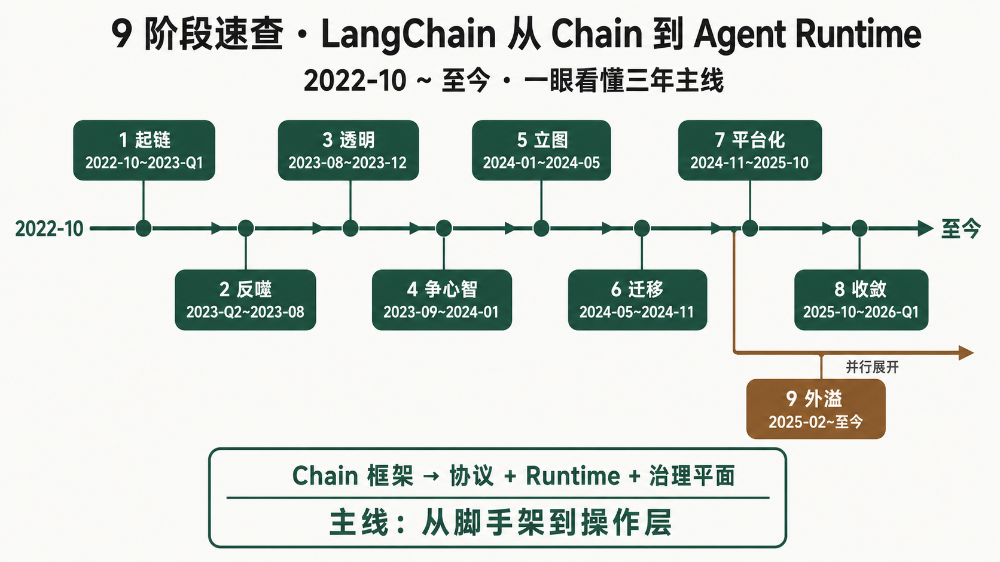
下表把全文压成一行一阶段：每段时间、当时同时存在的张力、团队的核心回应、最硬一条采用数据、留给下一阶段的结构问题。
| 阶段 | 时间 | 张力 | 设计回应 | 最硬数据 | 遗留问题 |
|---|---|---|---|---|---|
| Chain 爆发期 | 2022-10~2023-Q1 | 开发者急着把LLM大语言模型，负责根据上下文生成文本、结构化输出或工具调用意图。、Prompt Template把变量填入固定提示词结构的模板，用来稳定模型输入格式。、Retriever从知识库或搜索系统取回相关资料，再交给模型生成答案的组件。和工具串起来。 | 用 Chain、LLMChain、AgentExecutor 提供脚手架。 | langchain 主仓后续达到 138k★；首版在 2022-10 出现。 | 子类越堆越多，prompt 和控制流开始变黑盒。 |
| 抽象反噬期 | 2023-Q2~2023-08 | 易用性与透明度冲突，社区开始抱怨 5 层抽象、callback 和 streaming 难控。 | 停止继续堆 Chain，转向统一协议；LangSmith closed beta 先解决“看不见内部”。 | HN 6 个批评帖集中爆发；LangSmith closed beta 有 70k 候补。 | 需要一个可组合、可观测、可流式的统一接口。 |
| LCEL 透明化 | 2023-08~2023-12 | 旧 Chain 难组合，Streaming模型或链路边生成边返回结果，而不是等全部完成后一次性返回。、Async异步执行，允许任务等待外部调用时不阻塞整个程序。、Batch批量执行，同一链路一次处理多个输入以提升吞吐。、Retry失败后按策略重试，常用于模型、网络或工具调用不稳定场景。分散在各实现里。 | LCELLangChain Expression Language，用 Runnable 和 | 操作符描述可组合链路。 把组件统一为 RunnableLCEL 的统一可调用接口，规定 invoke、stream、batch、ainvoke 等方法。，用 | 描述链路。 | langchain-core 是所有 provider 包依赖的核心抽象层。 | DAGDirected Acyclic Graph，有向无环图，适合表达流水线，但不能表达循环。 能表达管线，表达不了 agent 循环。 |
| 多 Agent 竞争 | 2023-09~2024-01 | AutoGen、CrewAI 把心智带到多角色协作，单一 loop 的表达力被质疑。 | LangChain 开始把 agent 从“一个 executor”转向可定制运行时。 | AutoGen 58.3k★；CrewAI 52.1k★。 | 循环、状态和多 agent 协作必须成为一等概念。 |
| LangGraph 确立 | 2024-01~2024-05 | agent 需要循环、分支、状态、可恢复和人工中断，管线模型不够。 | 推出 langgraph、StateGraphLangGraph 的核心图定义，节点是函数，边是路由，所有节点共享 State。、checkpoint 和 interrupt。 | langgraph 33k★；2025-10 达到 1.0 GA。 | runtime 能跑了，但部署、评估、长期记忆仍分散。 |
| 迁移与稳定 | 2024-05~2024-11 | 新 runtime 已出现，旧入口、集成包、CVE 和兼容压力仍在。 | 用 create_react_agent 作为迁移缓冲，拆出 community 与 provider 包。 | langchain-community 的 GitHub 子仓 2025 archived，但 PyPI 包仍在。 | 生产治理没有被轻量部署工具解决。 |
| 平台化 | 2024-11~2025-10 | 线上 agent 要 trace、eval、dataset、HITL、部署和成本治理。 | LangServe 退场，LangSmith 与 LangGraph Platform 接住治理面。 | langserve archived；LangSmith 产品矩阵形成 Observe / Eval / Deploy。 | 产品线变多，用户需要稳定入口和清晰边界。 |
| 1.0 收敛 | 2025-10~2026-Q1 | 企业需要稳定 API，老用户需要兼容，新项目需要更薄入口。 | LangChain 1.0 与 LangGraph 1.0 GA；create_agent 成为主入口，旧 API 进入 langchain-classic。 | 2025-10-22：langchain 1.0 GA；langgraph 同期达到 1.0 GA。 | 框架稳定后，高层应用、协议和多语言开始外溢。 |
| 生态外溢 | 2025-02~至今 与 1.0 收敛部分并行 | 用户不只要 runtime，还要长期记忆、开箱 agent、工具协议和多语言接入。 | LangMemLangChain 官方长期记忆 SDK，用于抽取、巩固和检索 agent 记忆。、DeepAgents、Tool Server 协议族、MCP adapters、Go/JS 信号同时出现。 | langmem 2025-02-20 发布；deepagents 2025-07 启动，23k★；langchain-mcp-adapters 3.5k★。 | 协议标准化会压缩框架价值，平台治理与应用 harness 会继续上移。 |
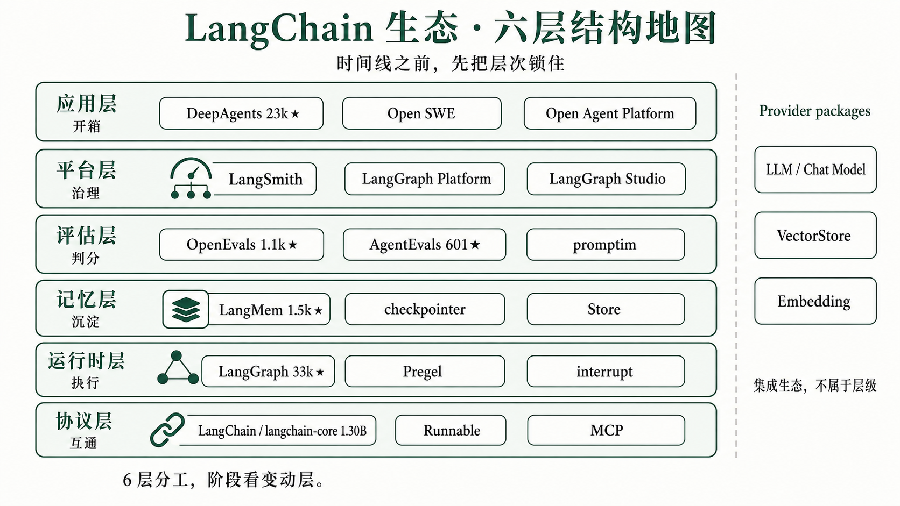
时间线只能说明“先后”，不能说明“层级”。今天的 LangChain 生态至少分成协议、运行时、记忆、评估、平台、应用六层：协议层决定互通，运行时层决定 agent 怎么跑，记忆和评估决定能否持续改进，平台层决定能否进生产，应用层决定普通用户是否能直接用。先锁住这六层，再看 9 个阶段，读者就能判断：每一次演进到底是哪一层在移动，哪一层在给下一层制造压力。
协议层是 LangChain 变薄后仍能保持生态入口的位置。这里的 protocol协议，指不同程序或组件约定好的数据格式、调用方式和交互规则。 不只是 HTTP API，而是 Runnable、Tool暴露给 agent 调用的外部能力，如搜索、数据库查询、发邮件或执行代码。、Message、MCPModel Context Protocol，把外部工具、资源和上下文以标准方式暴露给模型应用。、Agent Protocol、Tool Server把工具从本地函数变成远程可调用、可部署服务的协议或服务层。 这些互通边界。RPCRemote Procedure Call，远程过程调用，让一个进程像调用本地函数一样调用远端能力。、MCP 和 Tool Server 的出现说明：工具、agent、文档和运行轨迹正在从“库内对象”变成“跨框架资源”。
| 组件 | 角色 | 状态 / 数据 | 机制含义 |
|---|---|---|---|
langchain-core | Runnable / Tool / Message 核心协议 | active；所有 provider 包依赖 | 主包变薄后仍保留的底层接口。 |
langchain-mcp-adapters | MCP tools 转 LangChain / LangGraph tools | 3.5k★；active | 把外部 MCP 生态接入 agent runtime。 |
universal-tool-server | 通用 Tool Server 协议族 | active | 把 tool 从本地函数推向远程服务。 |
open-tool-server | 开放 Tool Server 实现 | active | 与 open/universal tool client 配套。 |
langsmith-tool-server | 面向 LangSmith 的 tool 部署 | active | 把工具发布到 LangSmith 运行面。 |
agent-protocol | agent 互通协议 | 593★ | 面向跨 agent、跨框架执行互通。 |
langchain-protocol | LangChain agent streaming 协议 Python binding | active | 把流式事件格式从实现中抽离。 |
mcpdoc | 文档 MCP 化 | 990★；new | 把 llms-txt 文档通过 MCP 暴露给 IDE。 |
运行时层回答的是 agent “怎么跑”。早期 executor 只是一段 loop；LangGraph 把循环、状态、分支、checkpoint某次执行后的状态快照，可用于恢复或回看历史。、superstepPregel/BSP 中的一轮同步计算，LangGraph 可在每轮后保存状态。 和中断变成 runtime运行时，指真正负责调度、执行、暂停、恢复和管理状态的系统层。 原语。它借鉴 PregelGoogle 图计算模型，LangGraph 借用其分步并行、消息传递和同步更新思想。 与 BSPBulk Synchronous Parallel，把计算切成多个同步阶段，每阶段结束统一更新。，同时开始出现 polyglot多语言生态，指 Python、JS/TS、Go、Java 等共同参与同一 runtime 或协议体系。 信号：Go orchestrator 可以通过 Python executor 复用现有能力。
| 组件 | 角色 | 状态 / 数据 | 机制含义 |
|---|---|---|---|
langgraph | 状态图 runtime | 33k★；1.0 GA 2025-10 | 用 StateGraph 承接循环、分支和持久状态。 |
langgraph-checkpoint | checkpoint saver 基类 | active；sqlite / postgres / mongodb / duckdb / aws 适配 | 让 long-running agent 可恢复、可回放。 |
langgraph-executor | Python RPC server | active；被 langgraph-go orchestrator 调用 | 把 Python runtime 暴露给其他语言调度。 |
langgraph-go | Go orchestrator 信号 | 通过 langgraph-executor 进入生态 | 说明 runtime 正在脱离单语言边界。 |
AgentMiddleware | agent 执行链路中间件 | 1.0 后进入主路径 | 在 runtime 周围挂记忆、策略、监控和控制点。 |
Short-term Memory当前任务或当前 thread 内的短期状态，通常由 checkpoint 支撑。 与 Long-term Memory跨任务、跨会话保留的知识或偏好，让 agent 能从历史交互中学习。 是两个常被混淆的系统问题。前者解决“这次任务跑到哪一步、如何恢复”，通常绑定 Thread一次对话或一次任务执行的上下文线索，通常绑定一组状态和历史记录。；后者解决“agent 是否能从过去交互中形成知识”。LangChain 的结构是：checkpoint 管短期图状态，Store跨 thread 的存储接口，可保存长期数据、用户偏好或记忆条目。 提供长期存储底座，LangMem 负责记忆抽取、巩固和检索。
| 组件 | 定位 | 状态 / 数据 | 时间尺度 | 典型用途 |
|---|---|---|---|---|
langgraph-checkpoint | 短期状态持久化 | active；多 saver 适配 | 单 thread / 单任务 | 失败恢复、time travel、人审续跑。 |
| LangGraph Store | 跨 thread 存储底座 | LangGraph memory 基础设施 | 跨任务 | 保存用户偏好、长期资料、记忆条目。 |
langmem | 长期记忆 SDK | 1.5k★；2025-02-20 发布 | 跨会话 / 跨任务 | 抽取 episodic、semantic、procedural 记忆。 |
langgraph-memory | 早期 memory 实验 | archived | 历史组件 | 被 langmem 接替。 |
| 维度 | 短期记忆 | 长期记忆 | 代表组件 | 采用信号 |
|---|---|---|---|---|
| 解决问题 | 任务中断后恢复当前状态。 | 跨任务保留知识、偏好和做法。 | checkpoint / LangMem | langgraph-checkpoint 多后端；langmem 1.5k★。 |
| 存什么 | graph state、消息、节点进度。 | Episodic Memory情节记忆，记录 agent 经历过的事件或交互片段。、Semantic Memory语义记忆，记录事实、偏好、概念等长期知识。、Procedural Memory程序性记忆，记录“如何做事”的步骤、规则或策略。。 | State / Store | langmem 官方文档单独成站。 |
| 时间尺度 | 一次 thread 或一次 run。 | 多个会话、多个任务、长期用户关系。 | thread id / namespace | namespace存储中的命名空间，用来隔离不同用户、任务或记忆域。 成为长期数据隔离手段。 |
| 存储 | SQLite、Postgres、MongoDB、DuckDB、AWS saver。 | LangGraph Store 或自定义记忆后端。 | checkpoint saver / Store | checkpoint 包拆出多个独立后端。 |
| 检索方式 | 按 thread 与 checkpoint id 恢复。 | 按语义、用户、任务或 namespace 检索。 | State lookup / semantic retrieval | 长期记忆进入 agent middleware 和 memory manager。 |
| 接入点 | graph.compile(checkpointer=...) | Store API、memory manager、agent middleware。 | LangGraph / LangMem | LangMem 与 LangGraph Store 配套。 |
| 典型场景 | 人审暂停后继续执行。 | 记住用户偏好、历史案例、操作流程。 | HITL / personalized agent | memory-agent、memory-template 等示例仓库出现。 |
评估层也分两类问题：评测器负责“怎么打分”，评测平台负责“团队如何管理实验、数据集、人工标注和回归”。Eval对 LLM 应用或 agent 行为进行打分、回归测试和质量比较的流程。 可以在本地跑，也可以进入 LangSmith UI 变成协作流程。对 agent 来说，仅看最终答案不够，还要看 Trajectoryagent 执行过程中的步骤轨迹，包括模型思考、工具调用、观察结果和最终输出。、tool call、延迟、成本和人工反馈。
| 维度 | OpenEvals | AgentEvals | promptim | LangSmith Eval |
|---|---|---|---|---|
| 定位 | 通用 LLM 应用 evaluator。 | agent trajectory evaluator。 | prompt 自动优化框架。 | 团队评测、实验和回归平台。 |
| 形态 | OSS library。 | OSS library。 | OSS framework。 | SaaS + self-host 平台模块。 |
| 数据 | 1.1k★。 | 601★。 | active。 | LangSmith Evaluation 为 GA 产品。 |
| 核心对象 | LLM-as-judge用另一个模型当裁判，对回答质量、轨迹或事实一致性打分。、规则评估。 | 工具调用、step 序列、轨迹质量。 | 多任务 prompt iteration。 | Dataset用于评测或回归测试的一组输入、期望输出和标签。、experiment、score、regression。 |
| 协作能力 | 代码里跑。 | 代码里跑。 | 代码和评测循环里跑。 | Annotation人工对样本、回答或轨迹进行标注和审核。、对比、审阅、权限。 |
| 观测连接 | 可接评测结果。 | 需要读取轨迹。 | 用评测驱动 prompt。 | Trace一次应用运行的完整调用记录，包含模型、工具、延迟、输入输出和错误。、Spantrace 中的一个子步骤，例如一次模型调用或一次工具调用。、Run Tree把一次复杂调用按父子关系展开的树形执行记录。 可直接进入 UI。 |
平台层负责把 agent 从“能跑”推进到“能上线、能诊断、能回归、能审计”。LangSmith 现在是统括品牌，向下覆盖观测、评估、部署、诊断、无代码 agent 和安全执行环境；LangGraph Platform 的部署能力也并入 LangSmith Deployment。这里的重点不是某个 UI，而是治理平面：它把运行轨迹、评测集、人工反馈、调度和部署权限放到同一工作面。
LangSmith ├─ Observe trace / debug / run tree ├─ Eval evaluator runs / dataset / regression ├─ Deploy 原 LangGraph Platform：durable execution / HITL / async runtime ├─ Engine 自动发现与诊断 agent 问题（2026） ├─ Fleet 无代码 agent 平台，2026-03 由 Agent Builder 改名 └─ Sandboxes agent 生成代码的安全执行环境
| 组件 | 定位 | 状态 / 数据 | 机制含义 |
|---|---|---|---|
| LangSmith | Agent 治理平台 | Observe / Eval / Deploy 为 GAGeneral Availability，正式可用版本，表示产品或 API 已进入稳定可用阶段。 | 把 trace、eval、deploy 和团队协作聚合。 |
| LangGraph Platform | 生产部署 runtime | merged into LangSmith Deployment | Durable Execution执行过程可持久化，任务中断或服务重启后仍能恢复。、HITLHuman-in-the-Loop，人在回路，指高风险动作前暂停等待人工确认。、async task。 |
| LangGraph StudioLangGraph 的可视化调试与操作台，用于看图、thread、状态和历史执行。 | 可视化调试操作台 | active；PyPI 包存在 | graph、thread、Time Travel回到历史 checkpoint 查看或修改状态，再从某个时间点继续执行。、memory debug。 |
langgraph-cli | 本地开发和部署入口 | active | 启动 dev server、配置部署、连接平台。 |
langgraph-sdk / JS SDK | 平台 API client | active | 让 Python、JS 应用调用 assistant、thread、run API。 |
| LangSmith Self-Hosted | self-host企业把平台部署在自己环境中，而不是使用公共 SaaS。 部署形态 | v0.13 在 2026-01 扩展能力对齐 | 满足企业安全、数据和合规边界。 |
补充术语：cron定时触发任务的调度机制。 负责按时间调度，webhook外部系统事件触发 agent 或 workflow 的 HTTP 回调机制。 负责按事件触发。
应用层出现的原因很直接：runtime 足够强，但仍然太薄。企业和开发者常常不是想从零拼图，而是要一个已经组合好 Planningagent 在执行前或执行中拆解任务、安排步骤的能力。、Filesystemagent 可读写的文件工作区，常用于 research、coding 或长任务。、Subagent被主 agent 委派处理子任务的从属 agent。 和 Sandbox安全执行代码或工具的隔离环境，避免 agent 直接污染主系统。 的 Harness把 runtime、工具、记忆、文件系统、子 agent 和 UI 包装成可直接用的应用外壳。。deepagents 的增长说明，高层应用外壳不是回到旧抽象，而是站在 LangGraph 之上把常见 agent 工作流产品化。
| 组件 | 定位 | 状态 / 数据 | 机制含义 |
|---|---|---|---|
deepagents | batteries-included agent harness | 23k★；2025-07 起；v0.4 于 2026-02 | 把 planning、filesystem、subagent、sandbox 打包。 |
deepagentsjs | JS 版 DeepAgents | 1.3k★ | harness 层也在向 JS/TS 复制。 |
deepagents-cli | 本地开发和部署 CLI | active | 把 harness 变成项目入口。 |
deepagents-code | coding-agent 终端体验 | active | 面向代码任务和终端交互。 |
deepagents-acp | Agent Client Protocol面向 agent 客户端和服务端通信的协议。 | active | 把 DeepAgents 扩展到 client/server 形态。 |
deep-agents-ui | DeepAgents 前端 UI | active | 降低非框架用户接入门槛。 |
open-swe | 异步 coding agent | 9.8k★ | 代表软件工程场景的应用化方向。 |
| Open Agent Platform | 无代码 agent 平台实验 | 1.9k★；archived，被 LangSmith Fleet 接替 | 方向保留，产品形态收敛到平台层。 |
| Sandbox adapters | 安全执行适配 | langchain-modal / langchain-runloop / langchain-daytona / langchain-agentcore-codeinterpreter / langchain-quickjs / langchain-repl | 为代码执行和工具运行提供隔离环境。 |
Provider模型、向量库、存储或工具服务的厂商适配包。 集成矩阵不是单独一层，而是生态规模信号。主包瘦身后，模型、向量库、embedding、数据扩展下沉为独立 provider 包：每个厂商有自己的发布节奏，主包少背依赖和 CVECommon Vulnerabilities and Exposures，公开安全漏洞编号，企业安全扫描会据此要求升级或拦截。 风险。调研报告在 PyPI 用户页看到 124 个包，说明 LangChain 的扩张方式已经从“一个大包装所有集成”变成“核心协议 + 独立适配包”。
langchain-openai
langchain-anthropic
langchain-google-genai
langchain-google-vertexai
langchain-aws
langchain-cohere
langchain-mistralai
langchain-ollama
langchain-fireworks
langchain-together
langchain-groq
langchain-chroma
langchain-pinecone
langchain-redis
langchain-postgres
langchain-qdrant
langchain-weaviate
langchain-google-community
langchain-huggingface
langchain-nvidia-ai-endpoints
langchain-voyageai
langchain-nomic
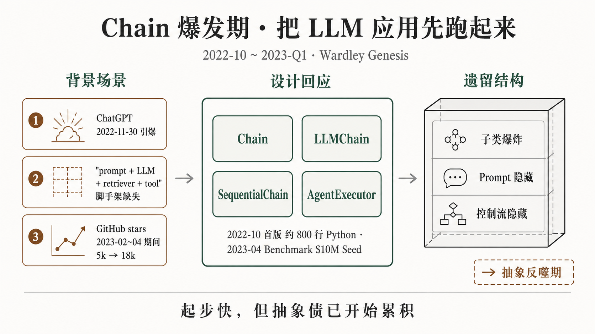
Wardley 注脚：本阶段 ChainLangChain 早期把 prompt、模型调用、解析器封装成一步可复用流程的基础抽象。 从 Genesis 进入 Custom-Built：需求刚被 ChatGPT 引爆，社区首先需要能把模型、提示词、检索和工具快速串起来的脚手架。
2022-11-30 ChatGPT 发布后，开发者突然开始搭建基于 LLM大语言模型，负责根据上下文生成文本、结构化输出或工具调用意图。 的应用，但当时缺少统一脚手架：Prompt Template把变量填入固定提示词结构的模板，用来稳定模型输入格式。 要自己写，模型调用要自己封装，RAGRetrieval-Augmented Generation，先检索外部资料，再让模型基于资料回答。 里的 Retriever从知识库或搜索系统取回相关资料，再交给模型生成答案的组件。、Vector Store存放文本向量并支持相似度检索的数据库，用于 RAG。、Embedding把文本转成向量表示，方便计算语义相似度。、Document Loader把 PDF、网页、数据库等外部资料读进 RAG 流程的加载器。 也没有统一入口。调研记录显示：LangChain 首次 commit 在 2022-10-17，Harrison Chase 后来回顾首版约 800 行；到 2023-04，star 从 2 月约 5k 涨到约 18k，并拿到 Benchmark 领投的 $10M Seed。
本阶段的张力是“快”与“透明”的冲突。开发者要在几天内把 demo 跑起来，所以需要预制组件；但真正进入复杂场景后，又需要看见 prompt、替换模型、接不同 Provider模型、向量库、存储或工具服务的厂商适配包。、控制 Streaming模型或链路边生成边返回结果，而不是等全部完成后一次性返回。 和 Async异步执行，允许任务等待外部调用时不阻塞整个程序。。另一个张力是“LLM 调用”与“agent 行为”的差别：一次模型调用可以封装成函数，但循环调用 Tool暴露给 agent 调用的外部能力，如搜索、数据库查询、发邮件或执行代码。、观察结果、继续推理，已经是更复杂的运行问题。
LangChain 的回应是先用子类化降低门槛：LLMChain 处理单次 prompt + model + parser，SequentialChain把多个 Chain 串起来执行，前一步输出作为后一步输入。 把多个步骤串起来，AgentExecutor早期 LangChain 的 agent 执行循环，封装 ReAct 式“思考-调工具-观察”流程。 则把 ReActReasoning + Acting，模型交替输出推理、工具动作和观察结果的 agent 模式。 loop 包成可调用对象。这一设计的工程价值很直接：用户不用先理解运行时，只要按教程组装 LLMChain最典型的 Chain 子类，组合 prompt 模板、LLM 和输出解析。、retriever、tool，就能把早期 LLM 应用跑起来。
Chain + AgentExecutorChain| 背景场景 | ChatGPT 后开发者要快速把 prompt、模型、parser、retriever 串成应用，但缺统一抽象。 |
| 张力条件 | 预制组件能快速上手，但子类越多，内部 prompt、输入输出和控制流越容易被藏起来。 |
| 设计回应 | 用 Chain 父类和 LLMChain、SequentialChain 等子类，封装常见 LLM 调用路径。 |
| 采用证据 | GitHub stars 从 2023-02 约 5k 增至 2023-04 约 18k；2023-04 获 Benchmark 领投 $10M Seed。 |
| 遗留结构 | Chain 把“跑起来”解决了，但把组合、streaming、async 和 prompt 可见性问题留给下一阶段。 |
AgentExecutor| 背景场景 | 用户不只想做单次调用，还想让模型根据问题选择 tool、观察结果、继续推理。 |
| 张力条件 | agent loop 需要默认行为；但一旦用户要改循环、插分支、限制停止条件，预制 executor 就会变硬。 |
| 设计回应 | AgentExecutor 把 ReAct 式 reason → act → observe 循环封成一个可调用执行器。 |
| 采用证据 | 早期教程和 issue 大量围绕 AgentExecutor；后续 #6025、#13897、#16263 等问题也证明它被广泛使用。 |
| 遗留结构 | 它把 agent 循环写进框架内部，用户只能调参数，难以把循环本身变成可描述对象。 |
采用证据来自三条独立信号：第一，star 曲线在 2023-02 到 2023-04 从约 5k 到约 18k，说明开发者需求快速聚集；第二，Runa Capital ROSS Index Q2 2023 把 LangChain 列入增长最快开源创业公司；第三，2023-04 的 Benchmark $10M Seed 说明资本市场也把它视为生成式 AI 应用层入口。这个阶段的成功不是抽象正确性的证明，而是市场迫切需要一个“先跑起来”的默认路径。
这一阶段留下的结构问题是：子类化一旦成为默认扩展方式，框架就会不断增加新 Chain、新参数、新兼容逻辑。对简单 demo，这些封装节省时间；对复杂应用，它们会遮住 prompt、streaming、async、tool loop 和状态传递。下一阶段的社区不满，正是这个“快上手但难改造”的代价集中显现。
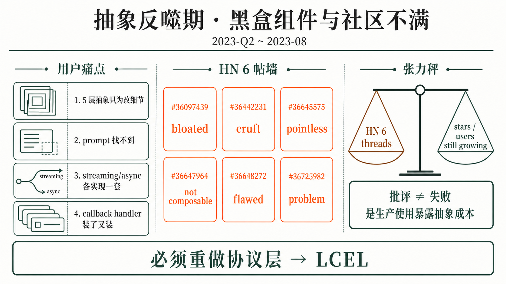
Wardley 注脚：本阶段 Chain 从 Custom-Built 走向早期 Product，但抽象债同步暴露；LangSmith Beta 处在 Genesis，用来捕捉 agent 内部不可见的问题。
到 2023-Q2，LangChain 已不再只是 demo 工具。用户把它用到 RAG、tool calling、agent loop 和多步 workflow 后，开始发现问题不是“能不能跑”，而是“能不能看懂、能不能改、出了错能不能定位”。社区批评集中出现在 Hacker News：id=36097439、36442231、36645575、36647964、36648272、36725982 六个帖子覆盖 2023-05 到 2023-07，关键词集中在 bloated abstraction、cruft、pointless、chains not really composable。
本阶段的张力是用户增长与框架声誉的分裂：下载和 star 继续增长，说明需求真实；HN 和 GitHub issue 继续抱怨，说明使用体验在复杂场景里变差。LangChain 团队面对的选择不是“继续增加更多 Chain”，而是要判断问题发生在组件数量、接口协议、观测能力还是 agent loop 本身。与此同时，团队还要开始回答商业问题：如果 agent 内部行为不可见，生产用户不会只买一个开源库。
本阶段没有一个新的主抽象发布，真正的设计回应是转向：一边准备把 Chain 系统拆成更统一的组合协议，一边启动 LangSmith BetaLangSmith 的封闭测试阶段，用于让团队观察、调试和评估 LLM 应用运行过程。。LangSmith closed beta 在 2023-07 启动，报告记录有 70k 候补；它没有直接解决 Chain 组合性，却先解决另一个生产问题：agent 运行内部需要可观测的 Trace一次应用运行的完整调用记录，包含模型、工具、延迟、输入输出和错误。。
| 背景场景 | Chain 被真实项目采用后，用户开始触碰 prompt 隐藏、接口不统一、调试困难和组合性不足。 |
| 张力条件 | 同一套抽象对新手是脚手架，对高级用户是遮挡层；规模增长反而放大了负面体验。 |
| 设计回应 | 社区用 HN 公开集中批评：36097439、36442231、36645575、36647964、36648272、36725982。 |
| 采用证据 | 批评发生在 star 快速增长之后，说明问题不是没人用，而是用多了以后发现抽象不可控。 |
| 遗留结构 | LangChain 必须把“预制子类”改成“用户可描述协议”，这直接导向 LCEL。 |
| 背景场景 | agent 运行过程包含模型调用、工具调用、错误、延迟和中间状态，但用户缺少统一观察面。 |
| 张力条件 | 开源框架解决开发入口，生产团队还需要 trace、调试、数据集和评估协作。 |
| 设计回应 | 2023-07 启动 LangSmith closed beta，用 web UI 和 run tree 捕捉复杂调用过程。 |
| 采用证据 | closed beta 阶段记录 70k 候补，说明可观测性已经成为独立需求。 |
| 遗留结构 | 观测层成为商业化主线，但 Chain 的组合与透明问题仍要由 LCEL 回答。 |
采用证据在本阶段呈现出“批评与增长并存”：HN 六帖说明社区对抽象层的公开不满已经形成规模；LangSmith 70k 候补说明生产用户确实需要看见 agent 内部；而 LangChain 主仓和 PyPI 使用仍在继续增长，说明批评不是需求消失，而是框架从 demo 走向复杂应用后暴露了机制缺口。
这一阶段留下的结构问题很清楚：如果继续靠子类补功能，框架只会更重；如果完全放弃封装，新用户又会失去脚手架。下一阶段必须出现一个中间层：既能让用户直接描述链路，又保留 streaming、batch、async、retry 等工程能力的默认支持。
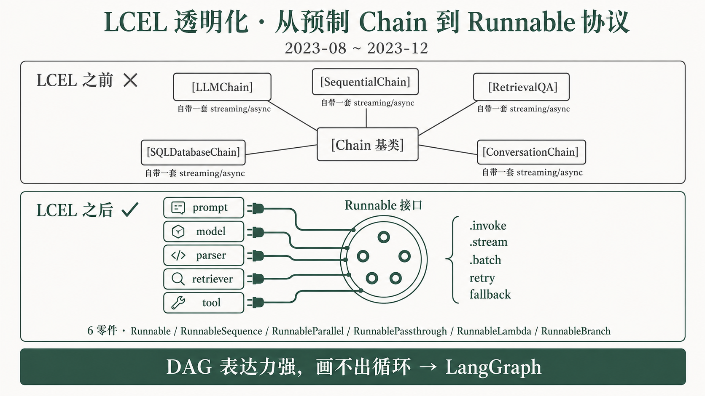
Wardley 注脚：本阶段 LCEL 从 Genesis → Product，Runnable 则开始向 Commodity 接近：它不只是一个实现，而是 LangChain 生态的共同接口。
LCEL 出现在 2023-08-01，前面直接承接 2023-Q2~Q3 的组合性和透明度压力，旁边还叠加了 OpenAI 2023-06 发布 Function calling模型按结构化 schema 输出函数调用意图，让程序可以可靠地选择工具和参数。 带来的工具调用标准化趋势。旧 Chain 系统的问题不是某个子类不好用，而是每个子类都可能自带一套输入输出、streaming、async、callback 和错误处理逻辑，导致复杂应用无法稳定组合。
本阶段的张力是兼容与重构的冲突：LangChain 不能让已有用户全部重写，但也不能继续把新能力塞进旧 Chain 子类。另一个张力是“语法简洁”和“工程能力完整”的冲突：用户希望像写表达式一样组合 prompt、model、retriever、parser，同时还要原生支持 Batch批量执行，同一链路一次处理多个输入以提升吞吐。、Retry失败后按策略重试，常用于模型、网络或工具调用不稳定场景。、Fallback主模型或主链路失败时，自动切换到备用模型或备用链路。 和流式输出。
设计回应是 LCEL：把所有可调用单元压成 RunnableLCEL 的统一可调用接口，规定 invoke、stream、batch、ainvoke 等方法。，再用 | 操作符LCEL 用来把 prompt、model、parser 等 Runnable 串接起来的语法。 组合。它的核心不是“换一种写法”，而是把接口、组合、streaming、batch、async、retry、fallback 做成同一套协议。
| LCEL 零件 | 中文定位 | 工程价值 |
|---|---|---|
| RunnableSequence用 | 串起来的顺序执行链路。 | 顺序链路 | 替代 SequentialChain，把前一步输出传给下一步。 |
| RunnableParallel并行执行多个 Runnable，并把结果合并成一个结构。 | 并行分支 | 让多个输入准备或检索并行发生。 |
| RunnablePassthrough把输入原样传下去，常用于给链路补充旁路字段。 | 原样透传 | 在复杂链路里保留原始问题或上下文字段。 |
| RunnableLambda把普通函数包装成 Runnable，让它接入 LCEL 管线。 | 函数适配 | 把普通 Python callable 接入组合协议。 |
| RunnableBranch根据条件选择不同分支执行的 Runnable。 | 条件分支 | 表达简单路由，但不承担完整循环状态机。 |
| __or__ dunderPython 中重载 | 操作符的特殊方法，LCEL 用它把左侧和右侧对象合成 RunnableSequence。 | 管道语法入口 | a | b 最终生成可执行的 Runnable 组合。 |
| 旧痛点 | LCEL 回应 |
|---|---|
| prompt 藏在 Chain 子类里。 | prompt、model、parser 都显式出现在表达式中。 |
| 子类接口不统一。 | 统一到 Runnable 的 invoke / stream / batch / ainvoke。 |
| streaming 各实现一套。 | Streaming模型或链路边生成边返回结果，而不是等全部完成后一次性返回。 成为接口能力。 |
| callback 和错误处理难复用。 | retry / fallback 作为链路方法组合。 |
| 组合方式被包装层遮住。 | 用表达式直接描述 DAGDirected Acyclic Graph，有向无环图，适合表达流水线，但不能表达循环。。 |
常用调用模式也统一到同一对象上：invoke 处理一次同步调用，ainvoke 处理 Async异步执行，允许任务等待外部调用时不阻塞整个程序。 调用，stream 返回流式结果，batch 处理多输入，with_retry 包装重试策略，with_fallbacks 包装备用链路。这些不是互相孤立的工具函数，而是同一个 Runnable 协议上的替代运行方式。
LCEL + Runnable| 背景场景 | Chain 子类过多，用户难以把 prompt、model、parser、retriever 透明组合起来。 |
| 张力条件 | 既要保持 LangChain 的上手速度，又要让高级用户直接控制链路形状。 |
| 设计回应 | 用 Runnable + | 表达可组合 DAG，并把 streaming、batch、async、retry、fallback 放进统一接口。 |
| 采用证据 | 2023-08-01 官方发布；langchain-core 后续成为所有 provider 包依赖的核心抽象层。 |
| 遗留结构 | LCEL 把链路透明化，但 DAG 天然不表达循环，agent runtime 仍需要新抽象。 |
Runnable| 背景场景 | 不同 Chain、retriever、model 和 parser 有不同调用方式，组合时需要大量胶水代码。 |
| 张力条件 | 接口必须足够简单，才能被所有组件实现；又要足够完整，承载流式、批量和异步。 |
| 设计回应 | 把所有可调用单元统一为 Runnable，规定 invoke、stream、batch、ainvoke 等方法。 |
| 采用证据 | 源码调研定位到 Runnable.__or__、RunnableSequence、RunnableParallel 等核心类；langchain-core 独立分发。 |
| 遗留结构 | Runnable 成为协议层底座，但循环、持久状态和人工中断不应继续塞进 Runnable 管线。 |
采用证据首先是时间点：LCEL 在 2023-08-01 发布，正好接在 HN 批评高峰之后。其次是包结构：langchain-core 独立承载 Runnable / Tool / Message，所有 provider 包都依赖它。第三是源码层证据：| 由 Runnable.__or__ 实现，coerce_to_runnable() 会把 callable 或 dict 包装成 RunnableLambda 或 RunnableParallel，说明 LCEL 不是文档层语法糖，而是核心组合协议。
LCEL 留下的结构问题是：它把“链怎么组合”讲清楚了，但它仍然是 DAG。agent 的本质是 reason → act → observe → reason 的循环，还需要长期状态、条件路由、人工审批和中断恢复。2023-Q4，外部竞品开始把多 agent 协作讲成新心智，LangChain 必须从“链路表达式”升级到“运行时”。
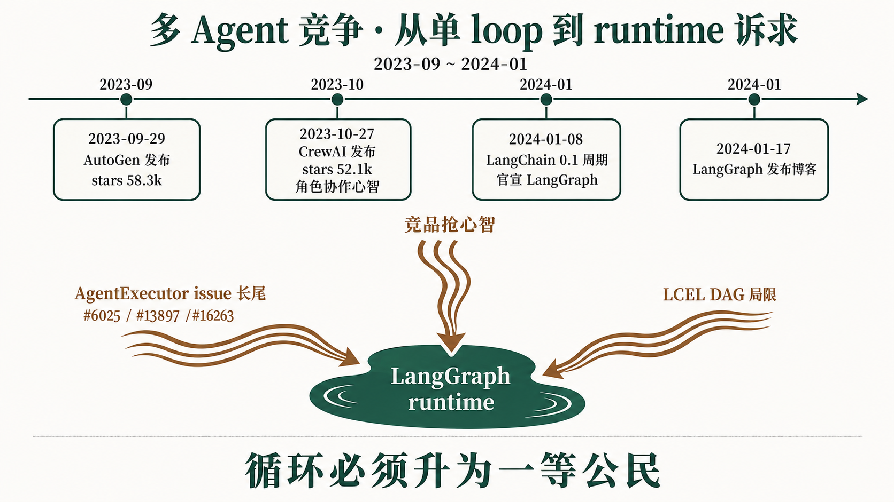
Wardley 注脚：本阶段 multi-agent多个 agent 分工协作、交接任务或共同完成目标的系统形态。 从 Genesis 快速进入 Custom-Built；LangGraph 雏形开始把 agent loop 从预制 executor 推向可定制 runtime。
2023-09 Microsoft AutoGen 公开，主打多 agent 对话；2023-10 CrewAI 仓库创建，主打角色、任务和协作心智。到 2026-05，AutoGen 58.3k★，CrewAI 52.1k★。这说明社区不再只问“怎么把一个模型调用串起来”，而是在问“多个 agent 怎么分工、交接、协作、回看执行轨迹”。同时，LangChain 自家 AgentExecutor 的 issue 长尾持续出现：#6025、#13897、#16263 等都指向停止条件、循环控制和工具调用行为不可控。
本阶段的张力是“协作叙事”与“生产控制”的冲突。AutoGen 强调 conversational agents，CrewAI 强调 role-based collaboration按角色分配 agent 职责，例如 researcher、writer、reviewer，再让它们协同完成任务。，更容易被用户理解；但生产系统还需要可恢复状态、确定性路由、可审计 Trajectoryagent 执行过程中的步骤轨迹，包括模型思考、工具调用、观察结果和最终输出。 和显式 handoff一个 agent 把任务、上下文或控制权交给另一个 agent 的过程。。LangChain 面临的问题不是是否跟进多 agent 口号，而是如何把循环、分支和状态做成可控的 agent runtime负责驱动 agent 循环、状态、工具调用、中断、恢复和调度的执行层。。
LangChain 的回应是在 2024-01 把 LangGraph 推到台前。2024-01-08 的 0.1.0 版本周期已经同时官宣 LangGraph；2024-01-17 的发布博客把问题说得更清楚：常规 directed acyclic graphs 不适合表达 agent 需要的循环。LangGraph 早期雏形不是再包装一个 AgentExecutor，而是把用户可描述的 state graph、循环边、条件路由和后续 checkpoint 能力作为 runtime 方向。
AutoGen + CrewAI + 早期 LangGraph 雏形| 背景场景 | 用户开始期待多个 agent 通过对话完成复杂任务，而不是只运行一个工具调用 loop。 |
| 张力条件 | 对话式协作直观，但生产控制、可恢复状态和可观测轨迹仍是难点。 |
| 设计回应 | Microsoft AutoGen 用 conversational agents 抢占多 agent 心智，强调 agent 之间通过消息协同。 |
| 采用证据 | 2023-09-29 公开；截至 2026-05，GitHub stars 58.3k。 |
| 遗留结构 | 它把“多 agent”推成热门叙事，也迫使 LangChain 明确自己的 runtime 路线。 |
| 背景场景 | 很多用户更容易用“角色 + 任务 + crew”理解 agent 协作，而不是从底层状态图开始。 |
| 张力条件 | 角色模板降低理解门槛，但也可能隐藏执行状态、分支条件和错误恢复机制。 |
| 设计回应 | CrewAI 用 crew、role、task 构造协作心智，强化“多角色团队”体验。 |
| 采用证据 | 2023-10-27 仓库创建；截至 2026-05，GitHub stars 52.1k，累计 PyPI 27M+ 下载，last month 约 5M。 |
| 遗留结构 | 它证明高层协作模板有市场，但生产级控制仍会回到 runtime 和状态管理。 |
| 背景场景 | LCEL 解决了链路组合，但 AgentExecutor issue 和竞品压力共同指向循环、状态和多 agent 路由。 |
| 张力条件 | LangChain 需要保留生态兼容，又必须提供比 hard-coded loop 更底层的控制面。 |
| 设计回应 | LangGraph 以 state graph 为方向，把循环、条件边和自定义 runtime 作为新边界。 |
| 采用证据 | 2024-01-17 发布博客明确点名 DAG 缺少 cycles；langgraph #265 早期就要求兼容 AgentExecutor 功能。 |
| 遗留结构 | 雏形已经出现，但还需要在下一阶段把 StateGraph、checkpoint、interrupt 变成稳定的一等公民。 |
采用证据来自三路压力合流：AutoGen 58.3k★ 和 CrewAI 52.1k★ 说明多 agent 心智被外部竞品抢占；AgentExecutor issue #6025、#13897、#16263 说明内部 loop 抽象已经有长尾痛点；langgraph #265 在早期就要求支持 AgentExecutor features，说明用户直接把 LangGraph 看成替换旧 loop 的新 runtime。
这一阶段留下的结构问题是：多 agent 不能只靠“角色协作”叙事，也不能继续靠一个 executor 参数表。LangChain 需要把循环作为一等公民，把状态从 prompt scratchpad 提升为 runtime state，把 agent 间路由从手写胶水提升为图结构。下一阶段的 LangGraph 确立，就是对这个问题的集中回答。
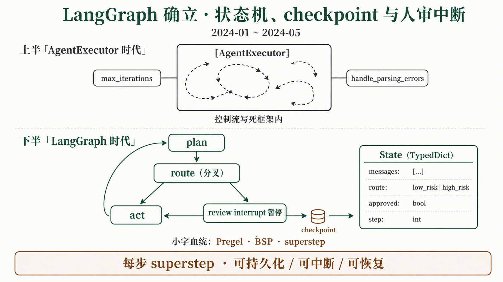
Wardley 注脚：本阶段 LangGraph 从 Genesis → Custom-Built：agent 循环、状态、断点恢复和人审中断从“用户自己写胶水”变成可显式建模的运行时能力。
2024-01 前后，多 agent 讨论已经把“一个 executor 跑到底”的模式推到边界。官方在 2024-01 的 LangChain 0.1 周期里承认 AgentExecutor 仍然只是“one way of running a loop”；而 agent 应用真实需要的是循环、条件分支、状态更新、工具调用、人审暂停和失败恢复。LangGraph 在 2024-01-17 发布博客中强调要创建 cyclical graphs，这正是对 DAGDirected Acyclic Graph，有向无环图，适合表达流水线，但不能表达循环。 管线能力边界的回应。
本阶段的张力是“控制流由框架藏起来”与“控制流由用户描述出来”的冲突。预制 executor 可以降低入门门槛，但高风险 agent 需要在中途停下、回放状态、切换路线、等待人审、从失败点恢复。另一个张力是同步执行与长任务执行的冲突：agent 不是一个短函数，运行过程中可能等待工具、等待人、等待外部事件，所以运行时必须把状态持久化，而不是只靠内存里的 while loop。
LangGraph 的设计回应是把 agent 建模为有状态图：用户定义 StateGraphLangGraph 的核心图定义，节点是函数，边是路由，所有节点共享 State。，编译成 CompiledStateGraphStateGraph 编译后的可执行对象，接入 Pregel runtime。，节点通过 ChannelLangGraph 节点间写入和合并状态的通道。 写入共享 State图执行期间共享和更新的业务状态，一般用 TypedDict 或 schema 描述。，运行时在 superstepPregel/BSP 中的一轮同步计算，LangGraph 可在每轮后保存状态。 之间同步更新。源码与文档都指向 PregelGoogle 图计算模型，LangGraph 借用其分步并行、消息传递和同步更新思想。 / BSPBulk Synchronous Parallel，把计算切成多个同步阶段，每阶段结束统一更新。 血统：每一步内部可以并行，步与步之间统一落盘、合并、路由。
| 一等公民 | 中文定位 | 解决的 runtime 问题 |
|---|---|---|
StateGraph | 用户描述的状态图 | 让循环、分支和多节点流程从 prompt 约定变成显式结构。 |
CompiledStateGraph | 编译后的可执行图 | 把图转成可 invoke / stream / batch 的运行对象。 |
Channel | 节点写入和状态合并通道 | 用 reducer多个节点同时写同一字段时的合并规则。 处理 fan-in 与并发写入。 |
| Checkpointer每个关键步骤后把 State 落盘，支持恢复、回放和人审中断。 | 断点持久化 | 让长任务能恢复、回放、做 Time Travel回到历史 checkpoint 查看或修改状态，再从某个时间点继续执行。。 |
| interrupt()在节点中主动暂停图执行，把控制权交给外部人审或系统，再从断点继续。 | 人审挂起 | 把 HITLHuman-in-the-Loop，人在回路，指高风险动作前暂停等待人工确认。 做成运行时原语。 |
| AgentExecutor 写法 | LangGraph 写法 |
|---|---|
executor = AgentExecutor(
agent=agent,
tools=tools,
max_iterations=5,
early_stopping_method="force"
)
result = executor.invoke({"input": goal}) |
graph = StateGraph(State)
graph.add_node("plan", plan)
graph.add_node("act", act)
graph.add_conditional_edges("plan", route)
app = graph.compile(checkpointer=checkpointer) |
| 循环和停止条件藏在 executor 内部。 | 节点、边、Conditional Edge根据当前 State 决定下一步走向的条件边。 都由用户显式描述。 |
| 人审通常要在业务层轮询或外接工作流系统。 | interrupt() 直接暂停当前 Thread一次对话或一次任务执行的上下文线索，通常绑定一组状态和历史记录。，外部输入后继续。 |
| 失败后恢复依赖用户自己保存中间状态。 | Durable Execution执行过程可持久化，任务中断或服务重启后仍能恢复。 由 checkpointer 支撑。 |
在平台语义里，Assistant部署平台中可被调用和版本管理的 agent 或 graph 配置实体。 可以指一个可部署的 graph 配置，Thread 则承载一次对话或任务执行的状态线索。
StateGraph · Checkpointer · interrupt()StateGraph| 背景场景 | AgentExecutor 的控制流写在框架内部，用户难以插入分支、人审或多 agent 路由。 |
| 张力条件 | 要保留默认 agent 能力，又要允许高级用户直接描述循环和状态变化。 |
| 设计回应 | StateGraph(State) 用 Node图中的一个执行单元，通常是一次模型调用、工具调用或业务函数。、Edge图中连接节点的边，决定执行顺序或条件路由。、条件边和共享 State 描述 agent runtime。 |
| 采用证据 | 2024-01 LangGraph 发布；2024-05 LangChain 0.2 把 LangGraph 写成推荐 agent 路线。 |
| 遗留结构 | StateGraph 解决了怎么跑，但长期记忆、平台部署和治理面仍在外部继续发展。 |
Checkpointer| 背景场景 | 长任务 agent 会中断、等待人审、调用外部系统，不能只依赖内存状态。 |
| 张力条件 | 每步都落盘会增加复杂度，但不落盘就无法恢复、回放和安全审批。 |
| 设计回应 | Checkpointer 在 superstep 后保存 graph state，提供 sqlite、postgres、mongodb、duckdb、aws 等 saver。 |
| 采用证据 | langgraph-checkpoint 与多个后端包独立存在，说明 checkpoint 成为运行时基础设施。 |
| 遗留结构 | 它保存的是短期执行状态，不负责从历史交互中学习长期知识。 |
interrupt()| 背景场景 | 高风险 agent 动作需要中途暂停，让人或外部系统审批后再继续。 |
| 张力条件 | 阻塞等待会浪费资源；直接继续又不安全；退出后还必须能从断点恢复。 |
| 设计回应 | interrupt() 在节点中写盘并退出，把控制权交还外部，再用新输入恢复执行。 |
| 采用证据 | HITL 成为 LangGraph、LangGraph Platform、Studio 文档和产品里的关键能力。 |
| 遗留结构 | runtime 有了人审原语后，企业还需要 UI、权限、审计和部署面来承接它。 |
采用证据有三类：时间上，LangGraph 在 2024-01 发布，2024-05 被写入 LangChain 0.2 推荐 agent 路线；架构上，langgraph 后续达到 33k★，并成为 2025-10 LangGraph 1.0 GA 的核心；源码上，Pregel runtime、checkpointer、StateGraph、Channel 都成为独立概念，而不是文档里的比喻。
这一阶段解决了“agent 怎么跑”，但没有解决“agent 如何进入生产组织”。短期状态能恢复了，长期记忆仍未成型；图能中断了，审批 UI、权限和审计还需要平台；新 runtime 出来了，旧 LangChain 的社区印象和迁移成本仍然存在。这些问题推动下一阶段进入迁移与稳定。
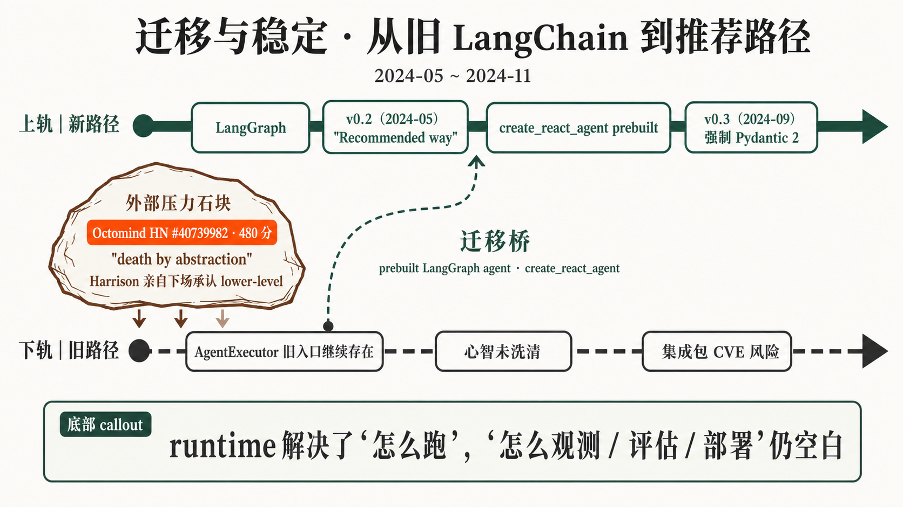
Wardley 注脚：本阶段 LangGraph 从 Custom-Built → Product：底层 runtime 已被验证，团队开始给旧用户迁移桥、版本稳定承诺和依赖拆分边界。
2024-05 到 2024-11，LangGraph 的方向已经确立，但社区仍把旧 LangChain 抽象债投射到整个品牌上。2024-06-20，Octomind 在 HN 发帖 id=40739982《Why we no longer use LangChain》，拿到 480 分和 297 评论，典型批评包括“5 layers of abstraction”和“death by abstraction”。Harrison Chase 亲自下场回应，强调路线正在转向 lower-level abstractions via LangGraph。
本阶段的张力是迁移与稳定。旧用户需要一个能继续跑的入口，新用户需要不再背旧抽象包袱；主包要稳定，第三方集成又容易引入依赖和 CVECommon Vulnerabilities and Exposures，公开安全漏洞编号，企业安全扫描会据此要求升级或拦截。 风险；框架要给企业信心，又不能把所有 provider、tool、memory 都塞回一个包。解决方式不能只是改文档，而是要改变推荐路径和包边界。
设计回应有三件事。第一，LangChain 0.2 把 LangGraph 写成 recommended way to build agents，并用 prebuiltLangGraph 提供的开箱即用 Agent 模板包，让用户不用从零写 StateGraph。 agent 缓冲迁移。第二，create_react_agent 让旧 ReActReasoning + Acting，模型交替输出推理、工具动作和观察结果的 agent 模式。 体验直接跑到 LangGraph runtime 上。第三，包结构开始解耦，第三方集成从主包下沉，配合 SemVer语义化版本规范，用 MAJOR.MINOR.PATCH 表达兼容性承诺。、安全边界和 2024-09 的 Pydantic 2Pydantic 的第二代版本，LangChain 0.3 阶段围绕它清理类型和依赖兼容。 迁移，进入稳定化工程。
create_react_agent · v0.2 集成解耦 · Octomind 风波create_react_agent| 背景场景 | 旧 AgentExecutor 用户不想从零写 StateGraph，但需要新 runtime 的可控性。 |
| 张力条件 | 底层范式要切换，用户心智不能一次性断裂。 |
| 设计回应 | 用 prebuilt create_react_agent 提供 ReAct loop 的 LangGraph 实现。 |
| 采用证据 | LangChain 0.2 文档和迁移 PR 把它作为替代旧 agent 初始化方式的桥。 |
| 遗留结构 | prebuilt 能缓冲迁移，但复杂生产流程仍需要用户理解 StateGraph。 |
| 背景场景 | 主包承载太多第三方集成，依赖体积、安全扫描和发布节奏开始互相牵制。 |
| 张力条件 | 集成越多生态越大，但集成越多主包越难稳定。 |
| 设计回应 | 把 community 与 provider 集成拆出，降低主包依赖面和 CVE 牵连风险。 |
| 采用证据 | 调研报告在 PyPI 用户页看到 124 个包；langchain-community 的 GitHub 子仓 2025 archived，但 PyPI 包仍在。 |
| 遗留结构 | 包边界清楚后，用户仍需要知道新推荐路径和旧 API 的兼容边界。 |
| 背景场景 | 新 runtime 已出现，但社区仍以旧抽象体验评价 LangChain 品牌。 |
| 张力条件 | 技术路线已经转向，市场认知却滞后；批评越高分，越说明迁移叙事必须清晰。 |
| 设计回应 | Harrison 公开回应，强调向 LangGraph 代表的 lower-level abstractions 转向。 |
| 采用证据 | HN id=40739982 获 480 分、297 评论，是一次高强度社区压力测试。 |
| 遗留结构 | 品牌需要稳定版本和清晰入口，最终推动 1.0 收敛。 |
采用证据既包括正向迁移，也包括反向压力：LangChain 0.2 把 LangGraph 写成推荐 agent 路线，说明官方推荐路径已经切换；Octomind HN 热帖说明旧抽象债仍强烈影响社区心智；provider 拆包和 Pydantic 2 迁移说明团队开始把稳定性、安全边界和依赖治理当成工程主线。
这一阶段让用户知道“新 agent 应该走 LangGraph”，但它仍没有完整回答“上线后怎么观测、怎么评估、怎么部署、怎么做人工审批 UI”。当 runtime 路线清晰后，生产问题自然浮出水面，下一阶段平台化就从可选能力变成主战场。
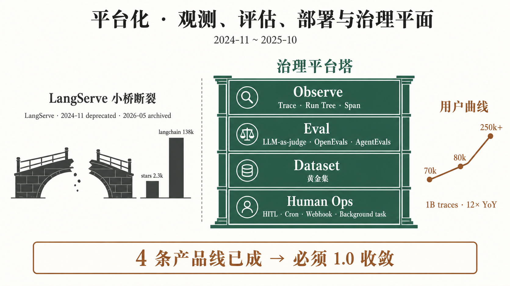
Wardley 注脚：本阶段部署和评估从 Custom-Built → Product：把 Runnable 包成 HTTP 服务的轻量工具退场，trace、eval、dataset、HITL 和部署治理开始平台化。
2024-11 到 2025-10，社区问题从“怎么写 agent”转成“怎么运营 agent”。LangServe stars 只有 2.3k，远低于 langchain 138k，说明“把链路包装成服务”没有成为主心智；而 LangSmith 从 2023-07 closed beta 70k 候补，到 2024-02 GA 80k 累计签约，再到 2025-02 的 250k+ 累计签约、1B traces，显示生产治理需求在高速增长。
本阶段的张力是轻量部署与治理深度。FastAPIPython Web 框架，LangServe 用它自动暴露 HTTP 接口。 包装能解决“服务暴露”，但不能解决 trace、评估、数据集、人审、成本、权限和回放。另一个张力是开源评测器与商业平台：团队需要本地 evaluator，也需要共享 Dataset用于评测或回归测试的一组输入、期望输出和标签。、Annotation人工对样本、回答或轨迹进行标注和审核。、实验对比和审批流程。
设计回应是平台化取舍：LangServe 在 2024-11-18 标记 deprecated官方不再推荐使用，通常保留兼容但不鼓励新项目采用。，2026-05 仓库 archived；LangSmith 强化 Trace一次应用运行的完整调用记录，包含模型、工具、延迟、输入输出和错误。、Eval、Dataset、Annotation；LangGraph Platform 承接生产部署、HITL、异步任务和 Background task后台任务，指无需用户同步等待、可异步持续运行的任务。；同时 OpenEvals 与 AgentEvals 提供 OSS evaluator。LangServe 早期提供 OpenAPI描述 HTTP API 的开放规范，便于生成文档、客户端和测试工具。 文档、Playground用于在浏览器里试跑、调试和演示 API 或模型链路的交互界面。 和 streaming，但这些不足以覆盖 agent 生产治理。
LangServe · LangSmith · LangGraph Platform · OpenEvals + AgentEvals| 背景场景 | 早期用户需要把 Runnable 快速暴露成 HTTP 服务。 |
| 张力条件 | HTTP 包装简单，但 agent 生产还需要状态、调度、HITL、trace 和评估。 |
| 设计回应 | LangServe 自动包装 FastAPI，提供 OpenAPI、streaming 和 playground。 |
| 采用证据 | 2024-11-18 deprecated，2026-05 archived；stars 约 2.3k，未形成主流部署心智。 |
| 遗留结构 | 部署问题从“包服务”升级为“治理平台”，LangGraph Platform 接班。 |
| 背景场景 | 团队需要知道 agent 为什么错、哪一步慢、哪次工具调用失败、哪个版本退化。 |
| 张力条件 | 开发者需要低摩擦 SDK，企业需要权限、协作、审计和长期数据。 |
| 设计回应 | LangSmith 提供 trace、eval、dataset、annotation、prompt versioning 和实验对比。 |
| 采用证据 | 70k beta 候补 → 80k GA 累计签约 → 250k+ 累计签约；1B traces；monthly trace volume 12× YoY。 |
| 遗留结构 | 观测和评估形成商业核心，但部署运行面仍需要和 LangGraph runtime 结合。 |
| 背景场景 | LangGraph runtime 解决了怎么跑，但企业仍要部署、调度、审批 UI 和后台任务。 |
| 张力条件 | 开源 runtime 保持灵活，商业平台提供省事的生产控制面。 |
| 设计回应 | LangGraph Platform 提供 durable execution、HITL、cron、webhook、background task。 |
| 采用证据 | 调研报告记录 LangGraph Platform 已并入 LangSmith Deployment。 |
| 遗留结构 | 平台能力上移后，LangChain 需要在 1.0 中给出统一品牌和入口。 |
| 背景场景 | 生产 agent 不能只看最终答案，还要评估轨迹、工具调用和多轮行为。 |
| 张力条件 | 本地评测器要开源可组合，团队协作又需要平台化 UI。 |
| 设计回应 | OpenEvals 提供通用 evaluator，AgentEvals 专注 agent trajectory。 |
| 采用证据 | OpenEvals 1.1k★；AgentEvals 601★。 |
| 遗留结构 | OSS evaluator 与 LangSmith UI 的关系成为评估栈的长期分工。 |
采用证据非常集中：LangServe 退场是负向证据，说明轻量部署模型没有承载生产需求；LangSmith 的 250k+ 用户、1B traces、12× YoY trace volume 是正向证据；OpenEvals 1.1k★、AgentEvals 601★ 则说明评估能力也在开源层独立成形。平台化不是商业包装，而是 agent 运行复杂度逼出来的治理需求。
这一阶段把“开发 agent”和“运行 agent”拆开了，但也带来新问题：LangChain、LangGraph、LangSmith、Platform、Eval、Deploy 多条线同时存在，用户需要稳定入口、版本承诺和兼容边界。下一阶段的 1.0 收敛，就是把这些分叉重新压回清晰架构。
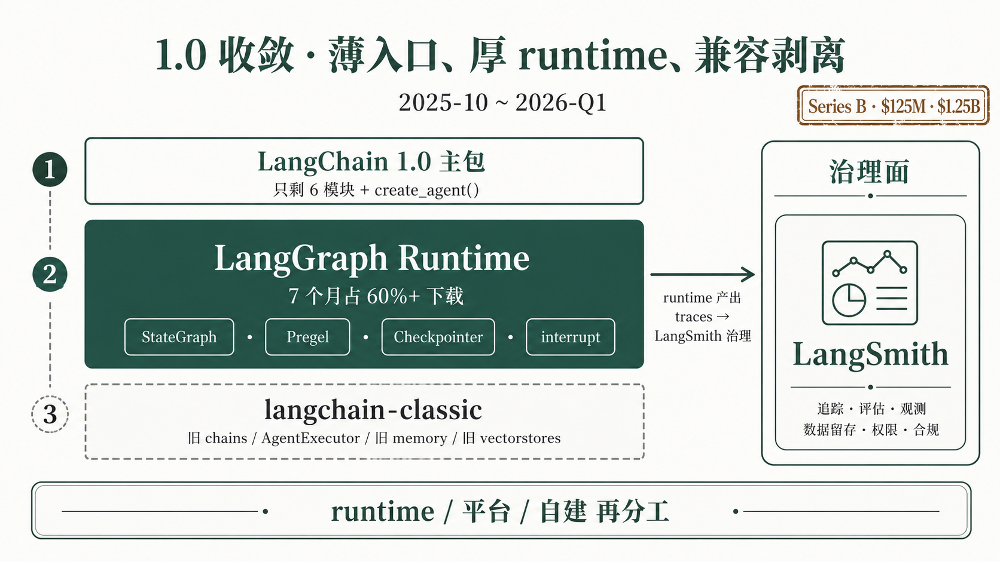
Wardley 注脚：本阶段核心框架从 Product → Commodity 边界移动：主包入口变薄，LangGraph runtime 变厚，历史 API 进入兼容包，企业稳定承诺成为产品本身。
2025-10 是 LangChain 的收敛节点。2025-10-20，LangChain 宣布 Series B：$125M 融资，估值 $1.25B，进入独角兽阶段；同一时期 Harrison 在三周年回顾里反省“we traded power for ease of use”。2025-10-22，LangChain 1.0 与 LangGraph 1.0 GA。调研数据还显示，LangGraph 1.x 发布 7 个月内占 langgraph 下载 60%+，说明迁移不是口号。
本阶段的张力是稳定与包袱。企业客户需要 GAGeneral Availability，正式可用版本，表示产品或 API 已进入稳定可用阶段。、兼容边界和版本承诺；老用户需要旧 Chain / AgentExecutor 还能跑；新用户需要不再从厚主包和历史 API 开始。商业上，Series B 之后公司必须讲清楚：哪些能力是开源 runtime，哪些能力是平台治理，哪些旧接口只做兼容。
设计回应是三层收敛：第一，create_agentLangChain 1.0 后推荐的高层 agent 创建入口，底层运行在 LangGraph runtime 上。 成为新的薄入口；第二，LangGraph 承接真正的 runtime；第三，langchain-classicLangChain 1.0 后承接旧 chains、agents、旧 memory 等 API 的兼容包。 承接旧 chains、agents、memory、vectorstores。这背后是一次明确的 package split把主包拆成多个独立包，以降低依赖、CVE 面和发布耦合。：用薄主包给新用户稳定入口，用兼容包给老用户迁移窗口，用 monorepo多个包或模块放在一个代码仓库里共同开发。 管理核心协议、runtime 和兼容层。
create_agent · langchain-classic · Series Bcreate_agent| 背景场景 | 新用户需要一个简单入口，但底层又必须是可靠、可治理的 LangGraph runtime。 |
| 张力条件 | 入口要 batteries-included开箱即用，指把常用能力预先打包好，减少用户自己拼装。，但不能把 runtime 复杂性重新塞进主包。 |
| 设计回应 | create_agent 提供一行式创建体验，底层运行在 LangGraph 上。 |
| 采用证据 | 2025-10-22 LangChain 1.0 GA，把它确立为推荐 agent 入口。 |
| 遗留结构 | 薄入口适合默认路径，复杂应用仍需要用户理解 StateGraph 和平台治理。 |
langchain-classic| 背景场景 | 老用户有大量 Chain、AgentExecutor、旧 memory 和 vectorstore 代码，不能突然断掉。 |
| 张力条件 | 保留旧 API 会污染主包；直接删除旧 API 会破坏迁移信任。 |
| 设计回应 | 把旧 API 迁入 langchain-classic，主包保持薄入口和少量核心模块。 |
| 采用证据 | 2025-10 的 1.0 配套出现；调研报告明确其用途是老 chains / agents / 旧 API 兼容包。 |
| 遗留结构 | 兼容包降低迁移风险，但也要求文档明确新旧路径边界。 |
| 背景场景 | LangChain 已从开源项目变成企业 agent 平台公司，需要商业稳定承诺。 |
| 张力条件 | 开源生态要快，企业采购要稳；runtime 可免费竞争，治理平台更接近采购预算。 |
| 设计回应 | 用 1.0 GA、LangSmith 平台矩阵和清晰包边界承接企业客户。 |
| 采用证据 | 2025-10-20 Series B：$125M，估值 $1.25B；调研记录提到 Fortune 500美国《财富》杂志按营收排名的 500 家大型公司，常被用作企业级采用信号。 渗透数据需在正文引用时核验来源。 |
| 遗留结构 | 商业化成功会继续把价值推向治理平面、部署平台和高层应用 harness。 |
采用证据包括三类：版本迁移上，LangChain 1.0 与 LangGraph 1.0 在 2025-10-22 GA；下载结构上，LangGraph 1.x 发布 7 个月内占 langgraph 下载 60%+；商业上，2025-10-20 Series B 的 $125M 与 $1.25B 估值说明治理平台和企业 agent 工程叙事已经进入资本市场验证阶段。
1.0 让地基稳定了，但也让更高层需求显得更清楚：用户不想每次都从 StateGraph 拼应用，企业需要长期记忆和安全沙箱，生态需要跨工具协议和跨语言入口。框架完成收敛后，能力开始向 harness、memory、protocol、polyglot 四个方向外溢。
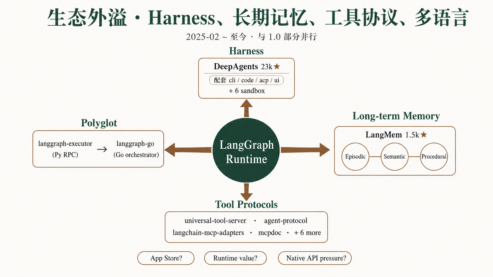
Wardley 注脚：本阶段多个能力并行移动：长期记忆从 Custom-Built → Product，应用 harness 从 Custom-Built → Product，工具协议从 Product → Commodity，跨语言 runtime 从 Genesis → Custom-Built。它与 1.0 收敛部分并行发生。
2025-02 之后，LangChain 生态不再只是“框架和 runtime”两层。Anthropic 在 2024-11 推出 MCPModel Context Protocol，把外部工具、资源和上下文以标准方式暴露给模型应用。 后，2025 上半年工具协议迅速成为行业事实标准；与此同时，create_agent 对企业复杂应用仍然太薄，用户需要开箱可用的 research agent、coding agent、长期记忆、文件系统和安全执行环境。多语言团队还希望 JS、Go、Java 能共享同一套 agent 能力。
本阶段的张力是开放协议与框架护城河。LangChain 如果继续守着单一 Python runtime，可能被外部原生 agent API 和 MCP 生态削弱；如果主动做协议和多语言，又会让一部分框架价值变成通用基础设施。另一个张力是高自由度与高便捷度：StateGraph 给高级用户自由，Harness把 runtime、工具、记忆、文件系统、子 agent 和 UI 包装成可直接用的应用外壳。 则把常见复杂 agent 预先打包。
设计回应同时发生在四条线上。第一，DeepAgentsLangChain 的高层 agent harness，封装 planning、filesystem、subagent 和 sandbox。 在 2025-07 启动并达到 23k★，配套 deepagentsjsDeepAgents 的 JS/TS 版本。、deepagents-cli、deepagents-code、deepagents-acp、deep-agents-ui，以及 langchain-modal、langchain-runloop、langchain-daytona、langchain-agentcore-codeinterpreter、langchain-quickjs、langchain-repl 等 Sandbox安全执行代码或工具的隔离环境，避免 agent 直接污染主系统。 适配。第二，协议层出现 10+ 仓库：universal-tool-serverLangChain 生态中通用 Tool Server 协议和实现方向。、open-tool-server、langsmith-tool-server、agent-protocol面向 agent 消息、执行和互操作的协议尝试。、ACPAgent Client Protocol，面向 agent 客户端和服务端通信的协议。、langchain-mcp-adapters、langchain-protocol、mcpdoc。第三，LangSmith Fleet、Engine、Sandboxes 上线。第四，polyglot多语言生态，指 Python、JS/TS、Go、Java 等共同参与同一 runtime 或协议体系。 信号出现：langgraph-executorPython 侧 LangGraph RPC 执行服务，用于被其他语言 orchestrator 调用。 是 Python RPCRemote Procedure Call，远程过程调用，让一个进程像调用本地函数一样调用远端能力。 server，langgraph-goGo 侧 LangGraph orchestrator 信号，体现 runtime 跨语言趋势。 是 Go orchestrator；JS 侧已有 langchainjsLangChain 的 JavaScript/TypeScript 生态。、@langchain/coreJS/TS 里的 LangChain 核心协议包。、@langchain/langgraphJS/TS 里的 LangGraph runtime 包。。
这里还需要区分 MCP server按 MCP 协议提供工具或资源的服务。 与 MCP client调用 MCP server 并把其能力接入模型应用的一侧。：前者暴露工具和资源，后者把它们接入 agent。Tool Server把工具从本地函数变成远程可调用、可部署服务的协议或服务层。 则是 LangChain 自己围绕远程工具服务化形成的协议族。
DeepAgents · LangMem · langchain-mcp-adapters · universal-tool-server · langgraph-go| 背景场景 | 企业要 deep research、coding agent 和文件工作流，不想从零拼 StateGraph。 |
| 张力条件 | 自由度高的 runtime 对专家友好，但普通团队需要 Planningagent 在执行前或执行中拆解任务、安排步骤的能力。、Filesystemagent 可读写的文件工作区，常用于 research、coding 或长任务。 和 Subagent被主 agent 委派处理子任务的从属 agent。 预装。 |
| 设计回应 | DeepAgents 把 planning、filesystem、subagent delegation、sandbox 和 UI/CLI 生态打包。 |
| 采用证据 | 2025-07 启动，23k★；配套 deepagentsjs 1.3k★ 和多个 sandbox 适配仓库。 |
| 遗留结构 | 高层 harness 会继续降低门槛，也会提出“应用商店化”和模板治理问题。 |
| 背景场景 | checkpoint 只能恢复当前任务，agent 还需要从历史交互中学习。 |
| 张力条件 | 长期记忆要有用，必须抽取知识；但抽取过度会引入隐私、污染和错误记忆。 |
| 设计回应 | LangMem 抽取 Episodic Memory情节记忆，记录 agent 经历过的事件或交互片段。、Semantic Memory语义记忆，记录事实、偏好、概念等长期知识。、Procedural Memory程序性记忆，记录“如何做事”的步骤、规则或策略。，并接入 LangGraph Store。 |
| 采用证据 | 2025-02-20 发布，1.5k★；官方文档站单独提供 langmem 文档。 |
| 遗留结构 | 长期记忆进入生态后，namespace存储中的命名空间，用来隔离不同用户、任务或记忆域。、权限、删除和质量控制会成为治理问题。 |
langchain-mcp-adapters| 背景场景 | MCP 迅速成为外部工具协议，LangChain agent 需要直接调用 MCP tools。 |
| 张力条件 | 拥抱外部协议会削弱封闭框架边界，但拒绝接入会丢掉工具生态入口。 |
| 设计回应 | langchain-mcp-adapters 把 MCP tools 转成 LangChain / LangGraph tools。 |
| 采用证据 | 3.5k★，在调研报告中被列为协议层高优先组件。 |
| 遗留结构 | 协议接入越顺畅，框架竞争越会转向 runtime、治理和应用 harness。 |
universal-tool-server| 背景场景 | tool 不应只存在于本地函数里，企业需要远程部署、发现、认证和复用。 |
| 张力条件 | 本地 tool 简单，远程 tool 可治理；但远程化需要协议、client 和部署面。 |
| 设计回应 | Tool Server 协议族提供 universal/open/langsmith tool server 与 client 组合。 |
| 采用证据 | 调研报告列出 universal-tool-server/client、open-tool-server/client、langchain-tool-client、langsmith-tool-server 等多个 active 仓库。 |
| 遗留结构 | 工具协议可能成为 agent 生态的公共基础设施，而不再归单一框架所有。 |
langgraph-go| 背景场景 | 企业后端不全是 Python，Go、JS、Java 团队希望复用 LangGraph 能力。 |
| 张力条件 | 重写完整 runtime 成本高；通过 RPC 调 Python runtime 又带来部署和延迟权衡。 |
| 设计回应 | langgraph-go 作为 Go orchestrator，通过 langgraph-executor 调 Python runtime。 |
| 采用证据 | 调研报告明确记录 langgraph-executor 是 Python RPC server，被 langgraph-go orchestrator 调用。 |
| 遗留结构 | langchain4jJava 社区里的 LangChain 风格项目，非 langchain-ai 官方仓库。 等项目更可能转向协议 client 和业务集成，而不是完全复刻 runtime。 |
采用证据横跨多个层级：DeepAgents 23k★ 说明 harness 有强需求；LangMem 1.5k★ 与 2025-02-20 发布说明长期记忆成为独立产品层；langchain-mcp-adapters 3.5k★、mcpdoc 990★、agent-protocol 593★ 和 Tool Server 族说明协议层正在聚集；deepagentsjs 1.3k★、langchainjs 18k★、langgraphjs 3k★、langgraph-go 则说明多语言不再只是外部社区想象。
这一阶段把全文接到三个未决问题。第一，harness 之上会不会出现 agent app store，还是会被企业内部门户吸收？第二，工具协议、MCP、Agent Protocol 标准化后，LangChain runtime 的独占价值会不会收窄？第三，polyglot 路线会不会被 OpenAI、Anthropic 等原生 Agent API 挤压？这些问题决定未来 12-24 个月，价值留在框架、流向协议，还是沉到平台治理层。
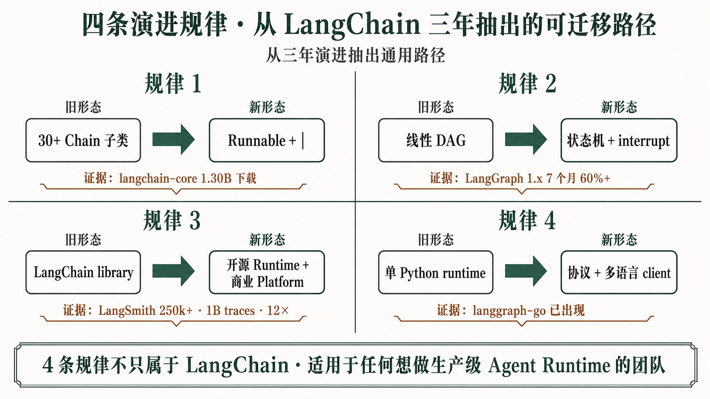
9 个阶段讲的是 LangChain，抽出来的规律却不只属于 LangChain。任何团队只要想做 Agent Runtime，都会遇到同一组迁移：从预制组件到用户描述协议，从线性管线到状态机，从开发框架到运行平台，再从单语言 runtime 走向协议层和多语言协作。
第一条规律：框架早期靠“预制组件”抢速度，成熟后必须让用户“描述协议”。LangChain 早期用 30+ Chain 子类降低门槛，用户可以直接拿 LLMChain、SequentialChain、AgentExecutor 开工；但子类越多，prompt、streaming、async、callback 和错误处理越容易藏在实现里。LCEL 的转折是把预制类拆成 Runnable + | 协议，让用户显式描述链路。
30+ Chain 子类
├─ LLMChain
├─ SequentialChain
├─ ConversationChain
└─ AgentExecutor
↓
Runnable 协议 + | 组合
prompt | model | parser
retriever | prompt | model
第二条规律：Agent Runtime 不能停留在线性 DAG。LCEL 把链路组合变透明，但它适合表达“从 A 到 B 到 C”的管线；agent 的核心是循环、状态、分支、工具反馈、人审中断和恢复。LangGraph 用 StateGraph、Channel、Checkpointer、interrupt，把这些能力放进状态机 runtime。采用数据说明这不是概念包装：LangGraph 1.x 发布 7 个月内占 langgraph 下载 60%+，说明用户确实从旧 loop 和 DAG 管线迁到状态图范式。
LCEL / DAG:
input → prompt → model → parser → output
LangGraph / State Machine:
plan → act → observe → route
↑ ↓
└──── checkpoint + interrupt ────┘
第三条规律：开发框架会继续上移成运行平台。能写 agent 只是第一步，能上线、回放、评估、审批、定位成本和控制权限，才是企业采用的真实门槛。LangServe 的退场说明“把 Runnable 包成 FastAPI”不够；LangSmith 的增长说明治理面才是高价值层。数据很硬：LangSmith 从 70k beta 候补到 250k+ 累计签约，累计 1B traces，2025-10 披露 monthly trace volume 12× YoY。runtime 可以开源竞争，治理平面更接近企业采购。
开发框架：写出来
Chain / LCEL / StateGraph
运行平台：管起来
trace / eval / dataset / annotation / HITL / deploy / cost
第四条规律：单 runtime 会外溢成协议层和多 runtime polyglot。LangChain 不再只守一个 Python 框架，而是在工具、agent、streaming、MCP、Tool Server 上做互通层。universal-tool-server、open-tool-server、langsmith-tool-server、agent-protocol、langchain-mcp-adapters、langchain-protocol、mcpdoc 都已经出现；langchain-mcp-adapters 已有 3.5k★。多语言也不是猜测：langgraph-executor 是 Python RPC server，langgraph-go 是 Go orchestrator；JS 侧有 langchainjs、@langchain/core、@langchain/langgraph。未来竞争会更像服务网格：协议在中间，runtime 围绕协议互通。
Before:
Python runtime
|
local tools / local graph
After:
┌────────────── Python runtime ──────────────┐
tools / docs ────┤ protocol layer: MCP / Tool Server / Agent ├──── JS runtime
└────────────── Go orchestrator ─────────────┘
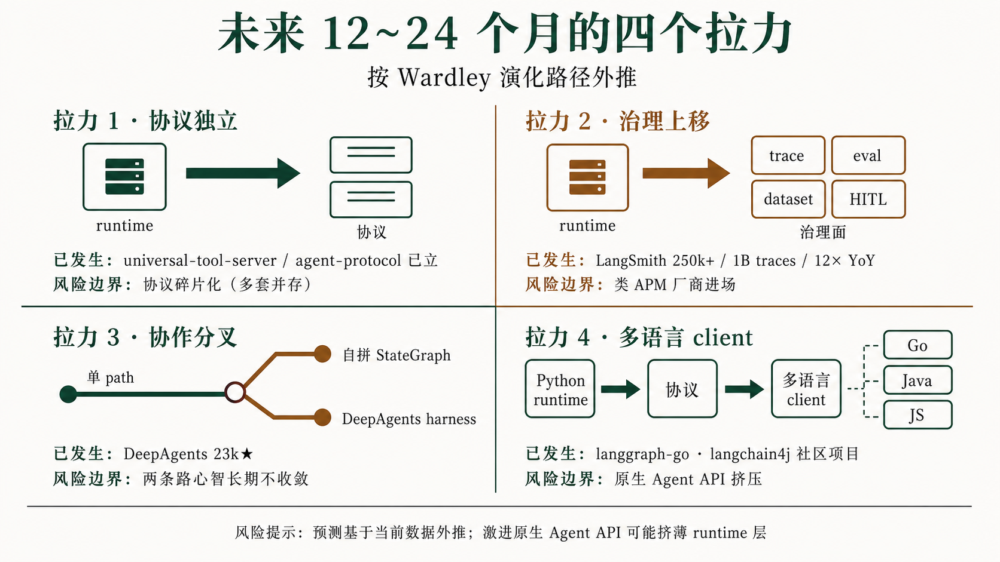
未来 12-24 个月，判断重点不是“哪个框架最热”，而是沿 Wardley 演化路径看价值会流向哪里：成熟能力会协议化，复杂治理会平台化，协作模式会在状态机和 harness 之间分工，多语言会更多通过协议和 client 连接，而不是每种语言重写一套完整 runtime。
预测 1：协议层会独立，框架会继续瘦身竞争。这个方向已经发生，不是远期想象。langchain-core 把 Runnable / Tool / Message 抽出来，provider 包围绕它独立发布；universal-tool-server、open-tool-server、langsmith-tool-server 在做远程 tool 协议族；agent-protocol 593★，langchain-mcp-adapters 3.5k★，说明跨框架互通已经成为真实工作。接下来框架竞争会从“谁包得多”转成“谁定义的接口更容易被别的 runtime 接入”。
预测 2：商业化主战场会继续停在治理平面，而不是开源 runtime 本身。LangSmith 的 Observe、Eval、Deploy 已是 GA；Engine 在 2026 进入自动诊断方向；Fleet 在 2026-03 由 Agent Builder 改名，承接无代码 agent 平台；Sandboxes 承接安全执行环境。这组模块说明商业产品正在回答企业最关心的问题：线上 agent 为何出错、哪个版本退化、谁审批、成本多少、能否回放。250k+ 用户、1B traces、12× YoY trace volume 让这条判断有真实用量支撑。
预测 3：多 Agent 协作会沿两条路并存。一条是高自由度路线：用户自拼 StateGraph，把每个 agent、tool、handoff、review 节点都显式放进状态机，适合高风险、高定制、强审计场景。另一条是高便捷路线：DeepAgents 把 planning、filesystem、subagent、sandbox 打包成 harness，适合 deep research、coding agent 和内部助手。两者不是谁取代谁，而是不同 Wardley 阶段的产品：StateGraph 提供底层表达力，DeepAgents 提供常见应用封装。
预测 4：polyglot 是趋势，但 JVM 端更可能走协议 client 路线，而不是完整重做一份 LangGraph runtime。原因很直接：状态图、checkpoint、interrupt、platform API 已经在 Python / JS / Go 侧形成实际组合，企业语言未必需要复制所有内部机制。更现实的形态是：Python runtime 继续承载最成熟的 LangGraph 执行能力，agent-protocol、MCP、Tool Server 提供互通边界，Java / JVM 侧通过 client、Spring AI ChatClient、自研轻量状态图和业务系统集成接入。社区 langchain4j 的长期定位也更可能是协议 client + 业务集成层，而不是 runtime replacement。
本附录只做查找：组件索引用来定位生态层级，术语表帮助零基础读者回看概念，参考来源保留数据与事件出处。
| 组件名 | 所在层 | 一句话定位 | 首次出现章节 | 最硬数据 | 状态 |
|---|---|---|---|---|---|
langchain | 核心包 | 主包与高层入口。 | 0 | 138k★；1.0 GA 2025-10-22 | active |
langchain-core | 协议层 | Runnable / Tool / Message 核心协议。 | 2.1 | 所有 provider 包依赖 | active |
langchain-community | 核心包 | 社区集成包。 | 8 | PyPI 包仍在；GitHub 子仓 2025 archived | archived / active package |
langchain-classic | 核心包 | 旧 chains / agents / 旧 API 兼容包。 | 10 | 1.0 配套出现，2025-10 | active |
langchain-text-splitters | 核心包 | 文本切分独立包。 | A | PyPI 独立包 | active |
langsmith SDK | 平台层 | LangSmith Python 客户端。 | 9 | LangSmith 250k+ 用户、1B traces | active |
langchain-mcp-adapters | 协议层 | MCP tools 转 LangChain / LangGraph tools。 | 2.1 | 3.5k★ | active |
universal-tool-server | 协议层 | 通用 Tool Server 协议族。 | 2.1 | 协议层 active 仓库 | active |
open-tool-server | 协议层 | 开放 Tool Server 实现。 | 2.1 | 与 open-tool-client 配套 | active |
langsmith-tool-server | 协议层 | 把 tools 部署给 LangSmith。 | 2.1 | LangSmith tool 部署仓库 | active |
agent-protocol | 协议层 | agent 互通协议。 | 2.1 | 593★ | active |
deepagents-acp | 协议层 | Agent Client Protocol。 | 11 | DeepAgents 配套协议 | active |
langchain-protocol | 协议层 | LangChain agent streaming 协议 Python binding。 | 2.1 | PyPI 独立包 | active |
mcpdoc | 协议层 | 把 llms-txt 文档通过 MCP 暴露给 IDE。 | 2.1 | 990★ | active |
langgraph | 运行时层 | 状态图 agent runtime。 | 2.2 | 33k★；1.0 GA 2025-10 | active |
langgraph-checkpoint | 运行时层 | checkpoint saver 基类。 | 2.2 | 多后端 checkpoint 包 | active |
langgraph-checkpoint-sqlite | 运行时层 | SQLite checkpoint 后端。 | 7 | 独立 checkpoint 包 | active |
langgraph-checkpoint-postgres | 运行时层 | Postgres checkpoint 后端。 | 7 | mono repo 内 active | active |
langgraph-executor | 运行时层 | Python RPC executor server。 | 2.2 | 被 langgraph-go orchestrator 调用 | active |
langgraph-go | 运行时层 | Go orchestrator 信号。 | 2.2 | 通过 langgraph-executor 接入 | active |
CompiledStateGraph | 运行时层 | StateGraph 编译后的可执行图。 | 7 | 接入 Pregel runtime | active API |
AgentMiddleware | 运行时层 | agent 执行中间件。 | 2.2 | 1.0 后关键控制点 | active API |
| LangGraph Store | 记忆层 | 跨 thread 存储底座。 | 2.3 | LangMem 接入基础设施 | active |
langmem | 记忆层 | 长期记忆 SDK。 | 2.3 | 1.5k★；2025-02-20 发布 | active |
langgraph-memory | 记忆层 | 早期 memory 实验。 | 2.3 | 被 langmem 接替 | archived |
openevals | 评估层 | 通用 LLM 应用 evaluator。 | 2.4 | 1.1k★ | active |
agentevals | 评估层 | agent trajectory evaluator。 | 2.4 | 601★ | active |
promptim | 评估层 | prompt 自动优化框架。 | 2.4 | active OSS | active |
| LangSmith Eval | 评估层 | 评估运行、实验对比和回归平台。 | 2.4 | LangSmith Evaluation GA | commercial |
| LangSmith | 平台层 | Agent 治理平台。 | 2.5 | 250k+ 用户；1B traces；12× YoY | commercial |
| LangGraph Platform | 平台层 | 生产部署 runtime。 | 2.5 | 并入 LangSmith Deployment | commercial |
| LangGraph Studio | 平台层 | 可视化调试操作台。 | 2.5 | PyPI 包存在 | active |
langgraph-cli | 平台层 | 本地开发和部署 CLI。 | 2.5 | active | active |
langgraph-sdk / JS SDK | 平台层 | 平台 API client。 | 2.5 | Python / JS SDK | active |
deepagents | 应用层 | batteries-included agent harness。 | 2.6 | 23k★；2025-07 起 | active |
deepagentsjs | 应用层 | DeepAgents JS 版本。 | 2.6 | 1.3k★ | active |
deepagents-cli | 应用层 | DeepAgents CLI。 | 2.6 | active | active |
deepagents-code | 应用层 | coding-agent 终端体验。 | 2.6 | active | active |
deepagents-acp | 应用层 | DeepAgents client/server 协议配套。 | 2.6 | active | active |
deep-agents-ui | 应用层 | DeepAgents 前端 UI。 | 2.6 | active | active |
open-swe | 应用层 | 异步 coding agent。 | 2.6 | 9.8k★ | active |
| Open Agent Platform | 应用层 | 无代码 agent 平台实验。 | 2.6 | 1.9k★；被 Fleet 接替 | archived |
| Sandbox repos | 应用层 | DeepAgents 安全执行适配。 | 2.6 | modal / runloop / daytona / agentcore / quickjs / repl | active mix |
langchain-openai | Provider | OpenAI 模型适配。 | 2.7 | provider 独立包 | active |
langchain-anthropic | Provider | Anthropic 模型适配。 | 2.7 | provider 独立包 | active |
langchain-google-genai | Provider | Google GenAI 适配。 | 2.7 | provider 独立包 | active |
langchain-google-vertexai | Provider | Vertex AI 适配。 | 2.7 | provider 独立包 | active |
langchain-aws | Provider | AWS / Bedrock 适配。 | 2.7 | provider 独立包 | active |
langchain-cohere | Provider | Cohere 适配。 | 2.7 | provider 独立包 | active |
langchain-mistralai | Provider | Mistral 适配。 | 2.7 | provider 独立包 | active |
langchain-ollama | Provider | Ollama 适配。 | 2.7 | provider 独立包 | active |
langchain-fireworks | Provider | Fireworks 适配。 | 2.7 | provider 独立包 | active |
langchain-together | Provider | Together AI 适配。 | 2.7 | provider 独立包 | active |
langchain-groq | Provider | Groq 适配。 | 2.7 | provider 独立包 | active |
langchain-chroma | Provider | Chroma vector store。 | 2.7 | VectorStore 独立包 | active |
langchain-pinecone | Provider | Pinecone vector store。 | 2.7 | VectorStore 独立包 | active |
langchain-redis | Provider | Redis vector / store 适配。 | 2.7 | VectorStore 独立包 | active |
langchain-postgres | Provider | Postgres vector / data 适配。 | 2.7 | VectorStore 独立包 | active |
langchain-qdrant | Provider | Qdrant vector store。 | 2.7 | VectorStore 独立包 | active |
langchain-weaviate | Provider | Weaviate vector store。 | 2.7 | VectorStore 独立包 | active |
langchain-google-community | Provider | Google community integrations。 | 2.7 | extension package | active |
langchain-huggingface | Provider | HuggingFace integrations。 | 2.7 | embedding / model package | active |
langchain-nvidia-ai-endpoints | Provider | NVIDIA endpoint integrations。 | 2.7 | provider package | active |
langchain-voyageai | Provider | VoyageAI embeddings。 | 2.7 | embedding package | active |
langchain-nomic | Provider | Nomic embeddings。 | 2.7 | embedding package | active |
langserve | 历史 | Runnable → FastAPI 部署工具。 | 9 | 2024-11-18 deprecated；2026-05 archived | archived |
opengpts | 历史 | 早期 GPT 框架。 | A | 6.7k★ | archived |
open-canvas | 历史 | 写作 UX 实验。 | A | 5.5k★ | archived |
permchain | 历史 | 早期权限 / agent 实验。 | A | 被 langgraph 取代 | legacy |
langchain-sandbox | 历史 | Pyodide + Deno 安全执行 untrusted Python。 | 11 | 仓库 archived，PyPI 包还在 | archived package |
langchain-experimental | 历史 | 实验性 API。 | A | GitHub archived，PyPI 还在 | deprecated |
langchain4j | 非官方相关 | Java 社区 LangChain 风格项目。 | 13.4 | 非 langchain-ai 官方 | community |
| AutoGen | 竞品 | Microsoft 多 agent 框架。 | 6 | 58.3k★；0.4 event-driven 重写 | community / corporate OSS |
| CrewAI | 竞品 | 角色协作 agent 框架。 | 6 | 52.1k★；PyPI 27M+ 累计 | active |
| LlamaIndex | 竞品 | RAG / agent 数据框架。 | A | 49.6k★ | active |
| 术语 | 一句话中文解释 |
|---|---|
| 操作符 | LCEL 用来把 prompt、model、parser 等 Runnable 串接起来的语法。 |
@langchain/core | JS/TS 里的 LangChain 核心协议包。 |
@langchain/langgraph | JS/TS 里的 LangGraph runtime 包。 |
__or__ dunder | Python 中重载 | 操作符的特殊方法，LCEL 用它生成 RunnableSequence。 |
| ACP | Agent Client Protocol，面向 agent 客户端和服务端通信的协议。 |
| Agent | 能根据目标循环调用模型、工具和记忆来完成任务的程序。 |
| Agent Client Protocol | 面向 agent 客户端和服务端通信的协议。 |
| Agent Runtime | 负责驱动 agent 循环、状态、工具调用、中断、恢复和调度的执行层。 |
| AgentEvals | 专门评估 agent 轨迹、工具调用和多步行为的开源评估器。 |
| AgentExecutor | 早期 LangChain 的 agent 执行循环，封装 ReAct 式“思考-调工具-观察”流程。 |
| AgentMiddleware | 插入 agent 执行链路的中间件，用于加监控、记忆、限制或策略控制。 |
| Annotation | 人工对样本、回答或轨迹进行标注和审核。 |
| archived | GitHub 仓库归档，通常表示不再维护。 |
| Assistant | 部署平台中可被调用和版本管理的 agent 或 graph 配置实体。 |
| Async | 异步执行，允许任务等待外部调用时不阻塞整个程序。 |
| Background task | 后台任务，指无需用户同步等待、可异步持续运行的任务。 |
| Batch | 批量执行，同一链路一次处理多个输入以提升吞吐。 |
| batteries-included | 开箱即用，指把常用能力预先打包好，减少用户自己拼装。 |
| beta | 公开或半公开测试阶段，API 和产品形态可能仍会变化。 |
| BSP | Bulk Synchronous Parallel，把计算切成多个同步阶段，每阶段结束统一更新。 |
| Channel | LangGraph 节点间写入和合并状态的通道。 |
| Chain | LangChain 早期把 prompt、模型调用、解析器封装成一步可复用流程的基础抽象。 |
| checkpoint | 某次执行后的状态快照，可用于恢复或回看历史。 |
| Checkpointer | 每个关键步骤后把 State 落盘，支持恢复、回放和人审中断。 |
| CLI | Command Line Interface，命令行工具。 |
| CompiledStateGraph | StateGraph 编译后的可执行对象，接入 Pregel runtime。 |
| Conditional Edge | 根据当前 State 决定下一步走向的条件边。 |
| create_agent | LangChain 1.0 后推荐的高层 agent 创建入口，底层运行在 LangGraph runtime 上。 |
| cron | 定时触发任务的调度机制。 |
| CVE | 公开安全漏洞编号，企业安全扫描会把 CVE 作为升级或拦截依据。 |
| DAG | Directed Acyclic Graph，有向无环图，适合表达流水线，但不能表达循环。 |
| Dataset | 用于评测或回归测试的一组输入、期望输出和标签。 |
| DeepAgents | LangChain 的高层 agent harness，封装 planning、filesystem、subagent 和 sandbox。 |
| deepagents-cli | DeepAgents 的本地开发和部署命令行入口。 |
| deepagents-code | 面向 coding agent 体验的 DeepAgents 终端形态。 |
| deepagents-ui | DeepAgents 的前端 UI。 |
| deepagentsjs | DeepAgents 的 JS/TS 版本。 |
| deprecated | 官方不再推荐使用，通常保留兼容但不鼓励新项目采用。 |
| Document Loader | 把 PDF、网页、数据库等外部资料读进 RAG 流程的加载器。 |
| Durable Execution | 执行过程可持久化，任务中断或服务重启后仍能恢复。 |
| Edge | 图中连接节点的边，决定执行顺序或条件路由。 |
| Embedding | 把文本转成向量表示，方便计算语义相似度。 |
| Episodic Memory | 情节记忆，记录 agent 经历过的事件或交互片段。 |
| Eval | 对 LLM 应用或 agent 行为进行打分、回归测试和质量比较的流程。 |
| Fallback | 主模型或主链路失败时，自动切换到备用模型或备用链路。 |
| FastAPI | Python Web 框架，LangServe 用它自动暴露 HTTP 接口。 |
| Filesystem | agent 可读写的文件工作区，常用于 research、coding 或长任务。 |
| Fortune 500 | 美国《财富》杂志按营收排名的 500 家大型公司，常被用作企业级采用信号。 |
| Function calling | 模型按结构化 schema 输出函数调用意图，让程序可以可靠地选择工具和参数。 |
| GA | General Availability，正式可用版本。 |
| handoff | 一个 agent 把任务、上下文或控制权交给另一个 agent 的过程。 |
| Harness | 把 runtime、工具、记忆、文件系统、子 agent 和 UI 包装成可直接用的应用外壳。 |
| HITL | Human-in-the-Loop，人在回路，指高风险动作前暂停等待人工确认。 |
| interrupt() | 在节点中主动暂停图执行，把控制权交给外部人审或系统，再从断点继续。 |
| LangGraph | LangChain 生态的状态图 agent runtime，用图表达循环、分支和状态更新。 |
| LangGraph Platform | LangGraph 的生产部署平台，提供持久化执行、调度、HITL 和后台任务。 |
| LangGraph Store | LangGraph 的跨 thread 存储接口，可作为长期数据和 LangMem 的底座。 |
| LangGraph Studio | LangGraph 的可视化调试与操作台，用于看图、thread、状态和历史执行。 |
| LangMem | LangChain 官方长期记忆 SDK，用于抽取、巩固和检索 agent 记忆。 |
| LangServe | 早期把 Runnable 包成 FastAPI 服务的部署工具，后被 LangGraph Platform 接班。 |
| LangSmith | LangChain 的商业治理平台，覆盖 trace、eval、dataset、annotation、deploy 等。 |
| LangSmith Deploy | LangSmith 中承接 LangGraph Platform 部署能力的模块。 |
| LangSmith Engine | LangSmith 中面向 agent 问题诊断和优化的运行治理模块。 |
| LangSmith Eval | LangSmith 中负责评估运行、实验比较和回归分析的模块。 |
| LangSmith Fleet | 由 Agent Builder 改名而来的无代码 agent 平台。 |
| LangSmith Observe | LangSmith 中负责 trace、debug、延迟和错误分析的模块。 |
| LCEL | LangChain Expression Language，用 Runnable 和 | 操作符描述可组合链路。 |
| LLM | 大语言模型，负责根据上下文生成文本、结构化输出或工具调用意图。 |
| LLM-as-judge | 用另一个模型当裁判，对回答质量、轨迹或事实一致性打分。 |
| LLMChain | 最典型的 Chain 子类，组合 prompt 模板、LLM 和输出解析。 |
| Long-term Memory | 跨任务、跨会话保留的知识或偏好，让 agent 能从历史交互中学习。 |
| MCP | Model Context Protocol，把外部工具、资源和上下文以标准方式暴露给模型应用。 |
| MCP client | 调用 MCP server 并把其能力接入模型应用的一侧。 |
| MCP server | 按 MCP 协议提供工具或资源的服务。 |
| monorepo | 多个包或模块放在一个代码仓库里共同开发。 |
| multi-agent | 多个 agent 分工协作、交接任务或共同完成目标的系统形态。 |
| namespace | 存储中的命名空间，用来隔离不同用户、任务或记忆域。 |
| Node | 图中的一个执行单元，通常是一次模型调用、工具调用或业务函数。 |
| OpenAPI | 描述 HTTP API 的开放规范，便于生成文档、客户端和测试工具。 |
| OpenEvals | LangChain 官方开源评估器集合，适合本地或 CI 中跑通用 LLM 应用评测。 |
| Open Agent Platform | 早期无代码 agent 平台实验，后续方向并入 Fleet。 |
| open-swe | LangChain Labs 的异步软件工程 agent 应用。 |
| package split | 把主包拆成多个独立包，以降低依赖、CVE 面和发布耦合。 |
| Planning | agent 在执行前或执行中拆解任务、安排步骤的能力。 |
| Playground | 用于在浏览器里试跑、调试和演示 API 或模型链路的交互界面。 |
| polyglot | 多语言生态，指 Python、JS/TS、Go、Java 等共同参与同一 runtime 或协议体系。 |
| Pregel | Google 图计算模型，LangGraph 借用其分步并行、消息传递和同步更新思想。 |
| Procedural Memory | 程序性记忆，记录“如何做事”的步骤、规则或策略。 |
| Prompt Template | 把变量填入固定提示词结构的模板，用来稳定模型输入格式。 |
| promptim | 用评估结果驱动 prompt 自动优化的工具。 |
| Provider | 模型、向量库、存储或工具服务的厂商适配包。 |
| Pydantic 2 | Pydantic 的第二代版本，LangChain 0.3 阶段围绕它清理类型和依赖兼容。 |
| RAG | Retrieval-Augmented Generation，先检索外部资料，再让模型基于资料回答。 |
| ReAct | Reasoning + Acting，模型交替输出推理、工具动作和观察结果的 agent 模式。 |
| reducer | 多个节点同时写同一字段时的合并规则。 |
| Regression | 新版本和旧版本在同一数据集上的质量回归比较。 |
| Retry | 失败后按策略重试，常用于模型、网络或工具调用不稳定场景。 |
| Retriever | 从知识库或搜索系统取回相关资料，再交给模型生成答案的组件。 |
| RPC | Remote Procedure Call，远程过程调用，让一个进程像调用本地函数一样调用远端能力。 |
| Run Tree | 把一次复杂调用按父子关系展开的树形执行记录。 |
| Runnable | LCEL 的统一可调用接口，规定 invoke、stream、batch、ainvoke 等方法。 |
| RunnableBranch | 根据条件选择不同分支执行的 Runnable。 |
| RunnableLambda | 把普通函数包装成 Runnable，让它接入 LCEL 管线。 |
| RunnableParallel | 并行执行多个 Runnable，并把结果合并成一个结构。 |
| RunnablePassthrough | 把输入原样传下去，常用于给链路补充旁路字段。 |
| RunnableSequence | 用 | 串起来的顺序执行链路。 |
| Sandbox | 安全执行代码或工具的隔离环境，避免 agent 直接污染主系统。 |
| Sandboxes | LangSmith 里的安全执行环境产品模块。 |
| SDK | Software Development Kit，给代码调用平台能力的开发包。 |
| self-host | 企业把平台部署在自己环境中，而不是使用公共 SaaS。 |
| Semantic Memory | 语义记忆，记录事实、偏好、概念等长期知识。 |
| SemVer | 语义化版本规范，用 MAJOR.MINOR.PATCH 表达兼容性承诺。 |
| SequentialChain | 把多个 Chain 串起来执行，前一步输出作为后一步输入。 |
| Short-term Memory | 当前任务或当前 thread 内的短期状态，通常由 checkpoint 支撑。 |
| Span | trace 中的一个子步骤，例如一次模型调用或一次工具调用。 |
| State | 图执行期间共享和更新的业务状态，一般用 TypedDict 或 schema 描述。 |
| StateGraph | LangGraph 的核心图定义，节点是函数，边是路由，所有节点共享 State。 |
| Streaming | 模型或链路边生成边返回结果，而不是等全部完成后一次性返回。 |
| Subagent | 被主 agent 委派处理子任务的从属 agent。 |
| superstep | Pregel/BSP 中的一轮同步计算，LangGraph 可在每轮后保存状态。 |
| Thread | 一次对话或一次任务执行的上下文线索，通常绑定一组状态和历史记录。 |
| Time Travel | 回到历史 checkpoint 查看或修改状态，再从某个时间点继续执行。 |
| Tool | 暴露给 agent 调用的外部能力，如搜索、数据库查询、发邮件或执行代码。 |
| Tool calling | 模型选择工具并生成参数，由程序实际调用工具再把结果交回模型。 |
| Tool Server | 把工具从本地函数变成远程可调用、可部署服务的协议或服务层。 |
| Trace | 一次应用运行的完整调用记录，包含模型、工具、延迟、输入输出和错误。 |
| Trajectory | agent 执行过程中的步骤轨迹，包括模型思考、工具调用、观察结果和最终输出。 |
| universal-tool-server | LangChain 生态中通用 Tool Server 协议和实现方向。 |
| Vector Store | 存放文本向量并支持相似度检索的数据库，用于 RAG。 |
| webhook | 外部系统事件触发 agent 或 workflow 的 HTTP 回调机制。 |
/tmp/langchain-community-data.md · 社区数据报告：PyPI、stars、HN、融资、竞品对照。